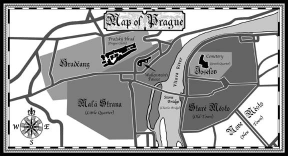

The Wallenstein Gambit
Eric Flint
Chapter I: The Bohemian Opening
March, 1633

1
"So what's this all about, Mike?" asked Morris Roth, after Mike Stearns closed the door behind him. "And why did you ask me to meet you in Edith's home?"
Grantville's jeweler looked around the small living room curiously. That was the part of Mike's request that Morris had found most puzzling. By the early spring of 1633, Stearns was usually so busy with political affairs that people came to see him in his office downtown.
As soon as he spotted the young man sitting in an armchair in the corner, Morris' curiosity spiked—and, for the first time, a trace of apprehension came into his interest. He didn't know the name of the young man, but he recognized him even though he wasn't in uniform.
He was a German mercenary, captured in the short-lived battle outside Jena the year before, who'd since enrolled in the army of the United States. More to the point, Morris knew that he was part of Captain Harry Lefferts' unit—which, in reality if not in official parlance, amounted to Mike Stearns' combination of special security unit and commandos.
"Patience, patience," said Mike, smiling thinly. "I'd apologize for the somewhat peculiar circumstances, but as you'll see for yourself in a moment we have a special security problem to deal with." He glanced at the man sitting in the armchair. "I think the best way to make everything clear is just to introduce you to someone. Follow me."
Stearns turned and headed for the hallway, Morris trailing behind. Edith Wild's house wasn't a big one, so it only took a few steps before he came to a closed door. "We're keeping him in here, while he recovers from his latest round of surgery. Edith volunteered to serve as his live-in nurse."
Morris restrained his grimace. Edith Wild was capable enough as a nurse, so long as it didn't involve any real medical experience. Like many of Grantville's nurses since the Ring of Fire, she'd had no background in medical work. She'd been employed in a glass factory in Clarksburg.
Her main qualification for her new line of work, so far as Morris could tell, was that she was a very big woman, massive as well as tall, and had much the same temperament as the infamous Nurse Ratchett in a movie he'd once seen, One Flew Over the Cuckoo's Nest. Not the sadism, true. But the woman was a ferocious bully. She was normally engaged in enforcing Grantville's public health laws, a job which required a firm hand given the huge influx of immigrants who had a seventeenth-century conception of sanitation and prophylaxis.
A "firm hand," Edith Wild certainly had. Morris had, more than once, heard Germans refer to her as "the Tatar." When they weren't calling her something downright obscene.
And who is "he"? Morris wondered. But he said nothing, since Mike was already opening the door and ushering him into the bedroom beyond.
It was a room to fit the house. Small, sparsely furnished, and just as spick-and-span clean as everything else. But Morris Roth gave the room itself no more than a cursory glance. Despite the bandages covering much of the lower face, he recognized the man lying in the bed within two seconds.
That was odd, since he'd never actually met him. But, perhaps not so odd as all that. Like many residents of Grantville, Morris had a poster up in his jewelry store that portrayed the man's likeness. True, in the form of a painting rather than a photograph. But he could now see that it was quite a good likeness.
He groped for words and couldn't find any. They'd have been swear words, and Morris avoided profanity. The poster in his shop was titled: Wanted, Dead or Alive.
The man was studying him with dark eyes. Despite the obvious pain the man was feeling, his expression was one of keen interest.
Abruptly, the man raised a hand and motioned for Morris to approach him.
"Go ahead," said Mike, chuckling harshly. "He doesn't bite, I promise. He couldn't anyway, even if he wanted to. His jaw's wired shut."
Reluctantly, much as he'd move toward a viper, Morris came over to the side of the bed. There was a tablet lying on the covers—one of the now-rare modern legal tablets—along with a ballpoint pen.
The man in the bed took the pen in hand and, shakily, scratched out a message. Then, held it up for Morris to see.
The words were written in English. Morris hadn't known the man in the bed knew the language. He wasn't surprised, really. Whatever other crimes and faults had ever been ascribed to that man, lack of intelligence had never been one of them.
But Morris didn't give any of that much thought. His attention was entirely riveted on the message itself.
CHMIELNICKI
I CAN STOP IT
For a moment, it seemed to Morris Roth as if time stood still. He felt light-headed, as if everything was unreal. Since the Ring of Fire, when Morris came to understand that he was really stranded in the seventeenth century, in the early 1630s, not more than a week had ever gone by without his thoughts turning to the Chmielnicki Massacre of 1648. And wondering if there was something—anything—he could do to prevent it. He'd raised the matter with Mike himself, several times before. Only to be told, not to his surprise, that Mike couldn't think of any way a small town of Americans fighting for its own survival in war-torn Germany in the middle of the Thirty Years War could possibly do anything to stop a coming mass pogrom in the Ukraine.
"How?" he croaked.
Again, the man scrawled; and held up the tablet.
COMPLICATED
STEARNS WILL EXPLAIN
BUT I WILL NEED YOUR HELP
Morris looked at Stearns. Mike had come close and seen the message himself. Now, he motioned toward the door. "Like he says, it's complicated. Let's talk about it in the living room, Morris. After the extensive surgery done on him, the man needs his rest."
Morris followed Mike out of the bedroom, not looking back. He said nothing until they reached the living room. Then, almost choking out the words, could only exclaim:
"Wallenstein?"
Mike shrugged, smiling wryly, and gestured at the couch. He perched himself on an ottoman near the armchair where the soldier was sitting. "Have a seat, Morris. We've got a lot to discuss. But I'll grant you, it's more than a bit like having a devil come and offer you salvation."
After Morris was seated, he manage a chuckle himself.
"Make sure you use a long spoon."
Seeing the expression on Mike's face, Morris groaned. "Don't tell me!"
"Yup. I plan to use a whole set of very long-handled tableware, dealing with that man. And, yup, I've got you in mind for the spoon. The ladle, actually."
"He wants money, I assume." Morris scowled. "I have to tell you that I get awfully tired of the assumption that all Jews are rich. If this new venture of ours takes off, I might be. Faceted jewelry is unheard-of in this day and age, and we should get a king's ransom for them. But right now . . . Mike, I don't have a lot of cash lying around. Most of my money is invested in the business."
Mike's smile grew more lopsided still. "Wallenstein's no piker, like the rest of them. He wants a lot more than your money, Morris. He doesn't want the gold from the goose, he wants the goose himself."
Morris raised a questioning eyebrow.
"Figure it out. Your new jewel-cutting business looks to make a fortune, right? So where's that fortune going to pour into? Grantville—or Prague?"
Morris groaned again. "Mike, I'm over fifty years old! So's Judith. We're too old to be relocating to—to— A city that doesn't have modern plumbing," he finished, sounding a bit lame even to himself.
Stearns said nothing, for a moment. Then, harshly and abruptly: "You've asked me four times to think of a way to stop the coming massacres of Jews in the Ukraine. Probably the worst pogrom in Jewish history before the Holocaust, you told me. This is the best I can manage, Morris. I can't do it, but Wallenstein . . . maybe. But it's a hell of a gamble—and, frankly, one which has a lot more parameters than simply the Jewish problem in eastern Europe."
Morris' mind was finally starting to work clearly again. "To put it mildly. Am I right in assuming that Wallenstein came here secretly to propose an alliance? He'll break from the Austrian Habsburgs and take Bohemia out of Ferdinand's empire?"
Mike nodded. "That—and the best medical care in the world. Julie's bullets tore him up pretty good, Morris, and the man's health was none too good to begin with. The truth is, Doctor Nichols—he did most of the actual surgery—doesn't think Wallenstein's likely to live more than a few years."
"A few years . . ." Morris mused. "Do you think—?"
"Who knows, Morris? Immediately, the alliance is a godsend for us, as weird as it looks. I've discussed it with Gustav Adolf and he agrees. If Becky's mission to France can't get us a peace with Richelieu, we're looking to be at war again soon. A revolt in Bohemia—sure as hell with Wallenstein in charge—will at least take the Austrians out of the equation. As for the Ukraine . . ."
He shrugged. "We've got fifteen years, theoretically—assuming the butterfly effect doesn't scramble so-called 'future history' the way it usually does."
"It'll maybe scramble the timing," Morris said grimly, "but I doubt it'll do much to scramble what's coming. The Chmielnicki Massacre was centuries in the making, and the ingredients of it were pretty intractable."
Mike nodded. Morris knew that after the first time he'd raised the subject with Mike, Stearns had done some research on it. He'd been helped, of course, by his Jewish wife and father-in-law. By now, Morris thought, Mike probably knew more than he did about the situation of eastern European Jewry.
"Intractable is putting it mildly. If it were just a matter of religious or ethnic prejudices and hatreds, it'd be bad enough. But there's a vicious class factor at work, too. Polish noblemen are the landlords over Ukrainian peasants—whom they gouge mercilessly—and they use the Jews as their rent collectors and tax farmers. So when the Ukrainian peasants finally revolted under Cossack leadership—will revolt, I should say—it's not too hard to figure out why they immediately targeted the Jews."
Morris sighed. As much as he was naturally on the side of the Jews in the Ukraine, he knew enough about the situation not to think for a minute that there was any simple solution. In fact, he'd once gotten into a ferocious quarrel with one of the Abrabanel scions who, like a number of the young Jews who had gravitated into Grantville, had become something of a Jewish nationalist.
Arm the Ukrainian Jews! the young man had proclaimed.
"For what?" Morris had snarled in response. "So they can become even more ruthless rent collectors? You stupid idiot! Those Ukrainian peasants are people too, you know. You've got to find a solution that they'll accept also."
He stared at the large bookcase against one of the walls, where Edith kept her beloved collection of Agatha Christie novels. For a moment, he had a wild and whimsical wish that the great detective Hercule Poirot would manifest himself in the room and provide them all with a neat and tidy answer.
Neat and tidy . . . in the seventeenth century? Ha! We never managed "neat and tidy" even in our own world.
"All right," he said abruptly. "As long as Judith agrees, I'll do it. I'll try to talk Jason Gotkin into coming with us, too, since he was studying to be a rabbi before the Ring of Fire."
Having made the pronouncement, he was immediately overwhelmed by a feeling of inadequacy. "But—Mike—I don't . . ."
"Relax, Morris," said Mike, smiling. "You won't be on your own. Just for starters, Uriel Abrabanel has agreed to move to Prague also."
Morris felt an instant flood of relief. Rebecca's uncle was probably an even more accomplished spymaster and political intriguer than her father Balthazar. And if he was elderly, at least he didn't have Balthazar's heart problems. So far as anyone knew, anyway.
"Take those young firebrands around Dunash with you, also."
Morris grimaced. Dunash Abrabanel was the young man he'd had the quarrel with. "I'm not sure they'll listen to me, Mike. Much less obey me."
"Then let them stay here and rot," Mike said harshly. "If nothing else, Morris, I want to give those fellows something to do that'll keep them from haring off to the Holy Land in order to found the state of Israel. I do not need a war with the Ottoman Empire on top of everything else."
Morris chuckled. "Mike, not even Dunash is crazy enough to do that. It's just a pipedream they talk about now and then, usually after they've had way too much to drink."
"Maybe so. Then again, maybe not. They're frustrated, Morris, and I can't say I blame them for it. So let's give them something constructive to do. Let them go to Prague and see if they can convince Europe's largest Jewish community to throw its support behind Wallenstein."
Morris was already thinking ahead. "That won't be easy. The Jews in Prague are Ashkenazim and they're Sephardic. Not to mention that Prague's Jewry is orthodox, which they really aren't—well, they are, but they often follow different—and . . . Oh, boy," he ended lamely.
"I didn't say it would be easy, Morris."
"Dunash will insist on arming the Jews."
Mike shrugged. "So? I'm in favor of that anyway. As long as those guns aren't being used to help Polish noblemen gouge their peasants, I'm all for the Jewish population being armed to the teeth."
"Will Wallenstein agree to that? As it stands, Bohemian laws—like the laws of most European countries—forbid Jews from carrying weapons."
Mike jerked at thumb at the bedroom door. "Why ask me? The man's right in there, Morris. Negotiate with him."
After a moment's hesitation, Morris squared his shoulders and marched into the bedroom.
* * *
When he came back out, a few minutes later, he had a bemused expression on his face.
"Well?"
Mutely, Morris showed Mike a sheet of paper from Wallenstein's legal pad. When Mike looked down at it, he saw Wallenstein's shaky scrawl.
AGREED
JEWS MAY BE ARMED
BUT MUST SUPPORT ME
OR I WILL BURN DOWN THE GHETTO
"He's not the nicest guy in the world," Morris observed. He folded up the sheet and tucked it into his short pocket. "On the other hand . . ."
Mike finished the thought for him. "He's ambitious as Satan and, whatever else, one of the most capable men in the world. Plus, he doesn't seem to share most of this century's religious bigotry. That doesn't mean he won't burn down the ghetto. He will, Morris, in a heartbeat. But he won't do it because you're Jews. He'll do it because you failed him."
* * *
Judith agreed more quickly than Morris would have thought. Indeed, his wife began packing the next morning. But the first thing she put in the trunk was the biggest ladle they had in the kitchen.
"We'll need it," she predicted.
2
"It looks a little weird without the statues," mused Len Tanner, adjusting his horn-rim glasses. He leaned over the stone railing of the Charles Bridge and looked first one way, then the other. The bridge was the main span across the Vltava river, and connected the two halves of the city of Prague. It had been built almost two centuries earlier, in the fourteenth century—though not finished until the early fifteenth, moving as slowly as medieval construction usually did—and had been named after the Holy Roman Emperor who commanded its erection. The Karlüv most, to use the proper Czech term, although Tanner said they hadn't given it that name until sometime in the nineteenth century. In this day and age, it was still just called the Stone Bridge.
Watching Tanner, Ellie Anderson almost laughed. Something in the little twitches Len was making with his lips made it clear that he'd have been chewing on his huge mustache, if he still had one.
But, he didn't—and wouldn't, as long as Ellie had anything to say about it. However many of Len Tanner's quirks and foibles she'd grown accustomed to and decided she could live with, that damned walrus mustache was not one of them. She preferred her men clean-shaven and always had, a quirk of her own she suspected came from memories of a great bearded lout of a father. Dim memories. He'd been killed in a car wreck when she was only seven years old, caused by a drunk driver. Him. It was a one-car accident and the only other casualty had been the oak tree at the sharp bend in the road near their house.
Fortunately, the oak tree had survived. Ellie's memories of the oak tree were a lot more extensive, and a lot fonder, than those of her father. Years later, she'd even built a treefort in it. The neighbors had been a little scandalized. Not so much by the implied disrespect for her father—truth be told, nobody in that little eastern Kentucky town had had much use for Dick Anderson—but because it was yet another display of the tomboy habits that had already made her the despair of the town's gentility.
"Gentility" as they saw themselves, anyhow. Ellie had thought then—still did—that the term was ludicrous applied to seven matrons, not one of whom had more than a high school education and only two of whom had ever been anything more than housewives and professional busybodies.
She wondered, for a moment, what had happened to any or all of them. She hadn't been back to her hometown in ten years, since her mother died of cancer and her two brothers had made it clear they'd just as soon not be burdened with her company. Since the feeling was mutual, she'd simply come in for the funeral and left the same evening.
And what do you care, anyway? she asked herself sarcastically. They're a whole universe away, so it's a little late to be thinking about it now.
But she knew the answer. Hers had been a self-sufficient life, and she was not sorry for it. Still, it had often been a lonely one, too.
It wasn't now, because of Len Tanner. Ten times more aggravating, often enough, but . . . not lonely.
"Looks weird," he repeated.
"Oh, for God's sake, Len! Doesn't it strike you as a little eccentric to call a city 'weird' because it doesn't have statues from three and half centuries later, in another universe, that only you remember because—far as I know—you're the only resident of Grantville weird enough to go to Prague on vacation?"
The jibe, not to Ellie's surprise, simply made Tanner look smug.
"Not my fault the rest of 'em are a bunch of hicks. 'Vacation,' ha! For most of 'em, that meant fishing somewhere within fifty miles or—ooh, how daring—a trip to the big city called Pittsburgh." Again, his lips made that wish-there-was-a-mustache-here twitch. "Ha! I remember, back when Mike Stearns went to Los Angeles for three years. Everybody else in Grantville—'cept me—thought he'd gone to Mars or something. The only 'furrin country' most of those boys had ever been to was Vietnam. And that was hardly what you'd call a sight-seeing trip."
It was one of the many odd little things about Len Tanner, Ellie reflected. To her surprise, she'd discovered that he was probably the most widely traveled man she'd ever known. Tourism was one of Len's passions. His main passion, probably, leaving aside that grotesque mustache. For his entire adult life, every vacation he'd gotten—and he'd always been willing to work extra hours to pile up vacation time—Tanner had gone somewhere outside the old United States. Some of them pretty exotic places, like China and—
Ellie chuckled. One of Tanner's little brags was that he was the only American veteran in Grantville who'd made it all the way to Hanoi. True, he was a veteran of the Grenadan conquest, which the Vietnam vets in town didn't consider a "real war." Still, they didn't begrudge him the boast. They even chuckled at it, themselves, partly because most people who got to know him tended to like Len Tanner, and partly because . . .
He was a lonely man, and, what was worse, a man who was uncomfortable in his loneliness. So, for years, his friends and drinking buddies had indulged his little oddities.
Loneliness had been at the heart of his compulsive traveling, Ellie suspected. Tanner had adopted tourism as a hobby, the way other lonely people adopt other things. And if it was a more expensive hobby than most, it had at least made Tanner less parochial-minded than most people of Ellie's acquaintance. He actually had seen the "big wide world," even if his ingrained awkwardness with learning foreign languages always kept him at a certain distance from the people whose countries he'd visited.
Now, Tanner was staring up at the Hradcany. The hill upon which Prague Castle was perched overlooked the entire city. It wasn't much of a hill, really, but it hardly mattered. The Prazský hrad—to use the Czech term for "Prague Castle"—seemed to dominate everything. It was an ancient edifice, begun in the ninth century a.d. by the rulers of the Slavic tribes who had migrated into the area a century or two earlier, and added to in bits and pieces as the centuries passed. But, always, whether the rulers of the area that eventually became known as Bohemia were Slavic princes or German Holy Roman Emperors, the seat of power was in Prague Castle.
"At least that's still pretty much the same," Tanner said. "Except for that stupid, boring façade they added in the eighteenth century. Good riddance—or riddance-never-come, I guess I should say." He exuded an air of satisfaction, studying the hill. "Even when I visited it, though, that gorgeous cathedral was the centerpiece. Now, even more so."
Ellie wouldn't have used the term "gorgeous" to describe St. Vitus Cathedral, herself. As far as she was concerned, the immense Gothic structure that loomed over the entire Hradcany belonged where everything Gothic belonged—in a romance novel, preferably featuring sexy vampires.
Womanfully, though, she restrained herself from calling it "ugly and grotesque." One of Tanner's many little quirks was that he invariably defended—ferociously—each and every architectural or artistic endeavor of the Roman Catholic Church. That was to make up, she'd once accused him, for the fact that he was never found in church more than once a year.
I ain't a "lapsed Catholic"! he'd responded hotly, at the time. Just, y'know, not around as much as maybe I oughta be.
Well, that's one way to put it, Ellie had retorted. Is that why Father Mazzare greets you with "howdy, stranger"?
Remembering that minor fight, she smiled a little. She and Tanner bickered a lot, but, truth be told, he really was a hard man to dislike. Once you got to know him, at least. Most of his vices and character flaws he wore on his sleeve. What lay underneath—assuming you could cut your way through that damn crust—was . . . really pretty nice and warm.
At least, Ellie Anderson thought so. More and more, in fact, as time went on.
* * *
As was her own nature, the surge of sentiment made her brusque.
"C'mon, Len! Let's quit gawking at the sights. We're supposed to be on a secret mission for Morris Roth, remember?"
Tanner gave her a sour look. Then, bestowed a look considerably more sour on the squad of men who were following them. Lounging along behind them, it might be better to say. The four mercenary soldiers in Pappenheim's pay somehow managed to make their way across a bridge as if they were loafing in an alehouse.
"Some 'secret' mission," he grumbled. "With those clowns in our wake. Why don't we just put on signs saying: Attention! Dangerous furriners!"
She took him by the arm and began leading him along the bridge, toward that part of Prague known as the Staré Mesto—which meant nothing fancier than "Old Town"—where the eastern end of the Charles Bridge abutted.
"Jesus! Were you just as suspicious of tourist guides, too, back in your globe-trotting days? You know damn good and well—ought to, anyway, as many briefings as we had to sit through—that nobody in this day and age thinks of anybody as 'furriners.' Well. Not the way you mean it. A 'furriner' is anybody outside of your own little bailiwick. So who cares if they're 'Czech' or 'German' or 'French' or 'English'—or even 'American,' for that matter? That's the business of the princes, not the townfolk."
By the end, she was almost grumbling the words herself. Tanner's quirks, harmless as they might be, were sometimes annoying.
"I never trusted guide books. They don't pay the guys who write 'em to tell the truth, y'know? They pay 'em to sucker in the tourists."
Her only response was to grip his arm tighter and march him a little faster across the bridge. And maybe tighten her lips a little.
Stubbornly, Ellie continued her little lecture. "So nobody—except you—gives a fuck about whether we're here on a 'secret mission' or not." She jerked her head backward a little, indicating the castle behind them. "Not even Don Balthasar de Marradas gives a damn what we're doing here. If he's even noticed us at all."
Len's good humor returned. "How's he supposed to? He's too busy squabbling with the Count of Solms-Baruth over which one of them is really the Emperor's chosen administrator for Prague. Gawd, there are times I love the butterfly effect."
Ellie grinned. Grantville's knowledge of central European history in the seventeenth century was spotty and erratic, as you'd expect from the records and resources of a small town in West Virginia that had neither a college nor a business enterprise with any particular reason to develop a specialized knowledge about central Europe, even in their own time much less three or four centuries earlier. But, there were occasional exceptions to that rule, little glimpses of historical detail—like islands in a sea of obscurity—usually engendered by some individual interest of one or another of Grantville's residents.
And, as it happened, Prague in the middle of the seventeenth century was one of them. That was because, some years before the Ring of Fire, Judith Roth had developed an interest in genealogy. She'd traced her ancestors back to the large Jewish community which had lived in Prague since the tenth century and had enjoyed something of a "golden age" recently because of the tolerant policies of the Austrian Habsburg Emperor Rudolf II, who'd reigned from 1576 to 1612.
Judith's interest in genealogy had lapsed, eventually. But she'd never bothered to erase the data she'd accumulated from her home computer's hard drive. Eventually, some months after the Ring of Fire, it had occurred to her to look at it again.
Melissa Mailey—for that matter, the entire executive branch of the U.S. government—had practically jumped for joy. Most of the information, of course, concentrated on Jewish genealogy and history. But, as is invariably true when someone does a broad and sweeping search for data on the internet, there was a lot of other stuff mixed in with it, mostly disconnected and often-useless items of information.
One of those little items—the one that was causing Tanner and Anderson to enjoy a moment's humor as they crossed the Charles Bridge—was that Johann Georg II, Count of Solms-Baruth and one of the Austrian emperor's top administrators, had died in the plague that swept Prague in the spring of 1632.
But that had been in a different universe. In this one, he was very much alive a year later, in the spring of 1633. Apparently, following Gustavus Adolphus' victory at the battle of Breitenfeld in September of 1631, the influence of the newly arrived Americans on events thereafter had been enough to send a multitude of ripples through "established history." Small ones, at the beginning, as was always true of the butterfly effect—so named after the notion that the flapping of a butterfly's wings could eventually cause a hurricane. But big enough, obviously, to allow one Count Johann Georg II to survive the disease that had felled him in another universe.
Good for him, of course—but now, also, good for those who were secretly scheming with Wallenstein to overthrow Austrian rule in Bohemia. Because the Count of Solms-Baruth was a stubborn man, and refused to concede pre-eminence in Bohemia's administrative affairs to the Emperor's favored courtier, Don Balthasar de Marradas. The enmity between Count Johann Georg and Don Balthasar went back to 1626, apparently, when Wallenstein had selected the count over the don as his chief lieutenant in the campaign against the Protestant mercenary Mansfeld.
Neither Tanner nor Ellie knew much of the details, which were as tangled as seventeenth-century aristocratic feuds and vendettas usually were. All that mattered to them was that Solms-Baruth was tacitly on Wallenstein's side, and he was doing his level best to interfere with Marradas' ability to retain firm Austrian control over political developments in Prague and Bohemia. Which, among other things, meant that the two of them could carry out their special project in Prague—even go on side expeditions like the one that was taking them across the Charles Bridge—without any real fear of being stopped and investigated by Austrian soldiery.
In fact, the only soldiery in sight were the four men in the squad following them—who had been given the assignment personally by Wallenstein's general Pappenheim, and had an official-looking document signed by the count to establish their credentials should anyone think to object.
"There are times," Ellie mused, "when the 'Machiavellian' scheming and plotting of these fucking seventeenth-century princes and mercenary captains reminds me of the Keystone Kops more than anything else."
Tanner came to an abrupt halt. "Think so?" He pointed a finger ahead of them, and slightly to the left. "We'll be coming to it soon, on our way to the Josefov. The Old Town Square—'Starry-mesta,' the Czechs call it, or something like that. That's where Emperor Ferdinand—yup, the same shithead who's still sitting on the throne in Vienna—had twenty-seven Protestant leaders executed after the Battle of the White Mountain."
Now he swiveled, and pointed back toward the Hradcany. "The guy who did the executing was—still is—one of the most famous executioners in history. Jan Mydlar's his name. When I was here, I saw his sword hanging in one of the museums in the Castle. They say he could lop a man's head off with one stroke, every time."
The finger lowered slightly. "They stuck the heads on spikes, right there, all along the Charles Bridge. They left them there to rot, for years. Only took the last down maybe a year ago."
He turned and they started walking again. In silence.
As they neared the end of the bridge, Ellie cleared her throat. "Whatever happened to that guy? The executioner, I mean. Jan Whazzisname."
Tanner shrugged. "Not sure. Maybe he's still alive."
Ellie gurgled something inarticulate. Tanner gave her a sly, sidelong glance.
"Hey, sweetheart, cheer up. The funny thing is, according to the story Mydlar was something of a Bohemian patriot himself. They say he wore a black hood that day—in mourning, so the story goes—instead of the flame-red hood he normally wore. So who knows? If he's still around, he might wind up working for us."
"Like I said," Ellie muttered. "The Keystone Kops. Okay, sure, on steroids."
Chapter II: Pawn to King Four
April, 1633
1
By the time the expedition finally set out for Prague, three weeks after his meeting with Mike Stearns and Wallenstein, Morris was feeling a bit more relaxed about the prospect. A bit, not much.
What relaxation did come to him derived primarily from the presence in their party of Uriel Abrabanel. By temperament, Rebecca's uncle was less given to sedentary introspection than his brother. True, Balthazar Abrabanel had spent much of his life working as a spy also. But he was a doctor by trade and a philosopher by inclination—more in the nature of what the term "spymaster" captures.
His brother Uriel had had no such side interests, beyond the financial dealings that were part of being a member of the far-flung Abrabanel clan and integral to his espionage. He'd spent much of his earlier life as a seaman—a "Portuguese" seaman, using the standard subterfuge of secret Jews anywhere the Spanish Inquisition might be found—and, though now in his sixties, he rode a horse as easily as he had once ridden a yardarm.
"Oh, yes," he said cheerfully, "they're a lot of hypocrites, the English. Jews have been officially banned from the island for centuries, but they always let some of us stay around, as long as we—what's that handy American expression?—ah, yes: 'kept a low profile.' Not only did their kings and queens and dukes and earls always want Jewish doctors, but they also found us so handy to spy on the Spanish for them."
Morris tried not to make a face. Even two years after the Ring of Fire, with the attitudes and sensibilities of one born and raised in twentieth-century America, he found it hard to accept the position of Jews in the seventeenth century. What he found harder to accept—and even more disturbing—was the readiness of Jews in his new universe to accommodate to that seventeenth-century reality.
Uriel must have sensed some of his distaste. "Whatever else, Morris, we must survive. And the truth is that, for all their hypocrisy, the English are no real threat to us. Not the Stuarts, nor the Tudor dynasty before them. The real enemy . . ."
His voice trailed off, as Uriel studied the landscape ahead of him. His eyes were slitted, though there was really nothing in that central European countryside to warrant the hostility. By now, having skirted Saxony, they were through the low Erzgebirge mountains and beginning to enter the Bohemian plain.
"The Habsburgs," he said, almost hissing the words. "There is the source—well, the driving engine, anyway—of Europe's bigotry in this day and age. The Austrians as much as the Spanish."
"I would have thought you'd name the Catholic Church. From what I hear, the Austrian Emperor has treated the Jewish community in Prague rather well."
"That's because he needs their money to keep his war coffers full. As soon as the war's over, Ferdinand will treat the Jews in Prague just as savagely as he treated the Utraquists and the Unity of Brethren. Watch and see."
Uriel shrugged. "I am not fond of the Roman Catholic Church, to be sure. But then, I'm no fonder of most Protestant sects either. No pope ever fulminated as violently against the Jews as Martin Luther. Still, religious intolerance we can live with. Being fair, it's not as if there aren't a lot of Jews who are just as intolerant. The real problem is when that intolerance gets shackled to a dynasty driving for continental power. Which, for centuries now in Europe, has meant the Habsburgs first and foremost."
Morris glanced to his left, where a number of horsemen were escorting several large wagons. Uriel followed his gaze, and a slight smile came to his face.
"Ah, yes. The Unity of Brethren. It will certainly be interesting to see how they finally—"
Again, he groped for an American colloquialism. Uriel was very fond of the things.
" 'Shape up,' " Morris provided.
"Indeed so! Such a splendid expression! 'Shape up', indeed."
Morris shook his head ruefully. The political situation he was about to plunge into in Prague was a genuine nightmare. Since the Habsburg armies had conquered Bohemia, after the short-lived period from 1618 to 1621 during which the Bohemians had tried to install a Protestant king against Ferdinand's wishes, the Austrian emperor had ruled the province tyrannically. In particular, he had introduced a level of brutality into religious persecution that had not been seen in Europe since the campaigns of the Spanish Duke of Alva during the first years of the Dutch revolt.
It was said that, upon hearing the news of the Catholic victory at the Battle of the White Mountain, a priest in Vienna had taken the pulpit to urge Emperor Ferdinand II to follow the Biblical precept: Thou shalt break them with a rod of iron; thou shalt dash them into pieces like a potter's vessel.
Ferdinand had needed no urging. He was a bigot by nature, who was a genuine Catholic fanatic, not simply a monarch using the established church to further his political ends. In point of fact, it was also rumored—apparently based on good information—that Pope Urban VIII had several times tried to rein in the Habsburg emperor's religious zeal. But, to no avail. Stalin's notorious wisecrack from a later century—how many divisions has the Pope?—would have been understood perfectly by rulers of the seventeenth century, the Catholic ones perhaps even better than the Protestants. Like Cardinal Richelieu in France, Emperor Ferdinand felt he was simply following Christ's advice to give unto Caesar that which was Caesar's.
And he was Caesar, and Bohemia was his, and he intended to make the most of it. Thus, he had:
—executed dozens of Protestant noblemen who'd led the short-lived revolt;
—banned the Utraquist and Calvinist and Hussite sects of the Protestant creed outright, and made it clear to the Lutherans that they were henceforth on a very short leash;
—abolished elective monarchy and made the Kingdom of Bohemia henceforth hereditary in the Habsburg line;
—had the Letter of Majesty, the Bohemians' much-cherished charter of religious liberty that had been captured in the sack of Prague, sent to him in Vienna, where he personally cut it into pieces;
—with his Edict of Restitution in 1629, seized Protestant churches and church property and given them to the Catholic church;
—seized the estates of "rebels," bringing into his dynasty's possession the property of over six hundred prominent Protestant families, fifty towns, and about half the entire acreage of the province;
—allowed his soldiery—mostly Bavarians in Bohemia and Cossacks in Moravia—to ravage and plunder the peasantry and the small towns, more or less at will, thereby saving himself much of the need to actually pay his mercenaries;
—ruined the economy of Bohemia and Moravia by severely debasing the currency in order to buy up still more estates;
—transformed the once-prosperous peasantry and urban commoners of the region into paupers, and created a handful of great landowners to rule over them (of whom none was greater and richer than Wallenstein, ironically enough in light of current developments);
—and . . .
* * *
Oh, it went on and on. True, Morris would admit—even Uriel would—Emperor Ferdinand II of Austria did not really make the roster of Great Evil Rulers of History. He just wasn't on a par with such as Tamerlane and Hitler and Stalin. But he was certainly a contender for the middleweight title of Rulers You'd Like to See Drop Dead. A narrow-minded, not overly intelligent man, who could invariably be counted on to follow the stupidest and most brutal policy offered to him by his multitude of advisers and courtiers.
Yes, stupid as well as brutal. A stupidity that was evidenced in the fact that the mission Morris was on was designed to break Bohemia away from the Habsburg empire again—permanently, this time, if all went well—and the instrument of that break would be the very man whom Ferdinand himself had raised up from obscure origins because he was the most brutally capable mercenary captain of the day and age.
Albrecht Wenzel Eusebius von Wallenstein. Born in the year 1583 into a family of the minor Protestant Bohemian nobility, and orphaned at the age of thirteen. Today he was the greatest landowner in Bohemia—possibly in the entire Austrian empire except for Ferdinand himself—as well as the duke of Friedland, a member of the Estate of Princes of the Empire, recognized as the duke of Mecklenburg by the Habsburgs (if not, of course, by the Swedish king Gustav Adolf who today actually controlled Mecklenburg), and prince of Sagan.
Thinking about Wallenstein—and the big ladle Judith had stuffed into one of their trunks—Morris grunted.
"What do you think of him, Uriel?"
Abrabanel had no difficulty understanding the subject. "Wallenstein? Hard to say." He paused for a moment, marshalling his thoughts.
"On the one hand, he is probably the most completely amoral man in the world. I doubt if there is any crime he would shrink from, if he felt it would advance his purposes."
"No kidding." Morris scowled. "He's the stinking bastard who ordered his Croat cavalry to attack our school last year. Tried to slaughter all of our children!"
Uriel nodded. "Indeed. On the other hand . . . There is a lot to be said for him, as well. It's no accident, you know, that he wound up becoming something of a folk hero in German legend."
He barked a little laugh. "Not an unmixed admiration, of course! Still, what I can tell of reading your books from the future, the Germans came to grudgingly admire the man in the decades and centuries after his death, much as the French never stopped grudgingly admiring Napoleon. The German poet and playwright Schiller even wrote several plays—in the next century, that would be—about him. Odd, really—a Corsican folk hero for the French, and a Bohemian one for the Germans."
The scowl was still on Morris' face. "Big deal," he said, adding somewhat unkindly: "That's just because the Frogs and the Krauts don't have too many genuine heroes to pick from."
Uriel's easy smile came. "Such terrible chauvinism! Of course, that term does come from a French word, so I suppose there's some truth to your wisecrack. Still—"
The smile didn't fade, but the old spy's dark eyes seem to darken still further. "Do not let your animosities get the best of you, Morris. This much is also true of Wallenstein: a peasant on one of his estates is in a better situation than peasants anywhere else in the Austrian empire. Wallenstein is shrewd enough to know when not to gouge, and he even fosters and encourages what you would call scientific farming. He opposed the Edict of Restitution and, by all accounts, is not much given—if at all, beyond the needs of diplomacy—to religious persecution. If he is amoral, he is not im-moral."
"They say he believes in astrology," grumbled Morris.
"Indeed, he is quite superstitious." Uriel's smile broadened, becoming almost sly. "On the other hand, they also say he treats his wife very well."
Morris grunted again. "Um. Well, okay. That's something, I guess."
* * *
They heard the sounds of a horse nearing and twisted in their saddles to look backward. The motions were easy and relaxed, since both men were experienced riders. In Morris' case, from an adult lifetime of being an enthusiast for pack-riding; in Uriel's, from an adult lifetime that had had more in the way of rambunctious excitement—including several desperate flights on horseback across the countryside—than most city-dwelling Jews of the time ever experienced.
The same could not be said for the man approaching them, and neither Morris nor Uriel could restrain themselves from smiling. Jason Gotkin, though in his early twenties, was not at all comfortable on horseback—and showed it. He rode his mount as gingerly, and with the same air of uncertainty, as an apprentice liontamer enters a lion's cage.
Seeing their expressions, Jason flushed a little. When he finally came alongside—it might be better to say, edged his horse alongside with all the sureness of a cadet docking a boat—his words were spoken in something of a hiss.
"Look, I was getting a degree in computer science and was trying to decide between a life spent as a software engineer or a rabbi. I was not planning to become a cowboy."
Uriel's smile widened into a grin. Among the uptime hobbies that Uriel had adopted since the Ring of Fire, reading westerns was one of them. He was particularly fond of Donald Hamilton, Luke Short and Louis L'Amour.
"I should hope not! Leaving aside your pitiful manner on horseback, you can't—what's that expression?—hit the broadside of a barn. With a rifle, much less a revolver."
"Software engineer," Jason hissed again. "Rabbi." He scowled faintly. "The average rabbi does not pack a gun. Not even in New York—and wouldn't, even if it weren't for the Sullivan Act."
Morris' gaze slid away from Jason and drifted back toward the rear of the not-so-little caravan. There, almost at the very end, was the small group of horsemen centered around the figure of young Dunash Abrabanel. None of them rode a horse any better than Jason. But, unlike Jason, all of them were armed to the teeth. They looked like a caricature of highwaymen, in fact, they had so many firearms festooned upon their bodies and saddles.
Morris sighed. "We're nearing Bohemian territory, if we're not already in it. They're going to have to hide the guns, Jason. Whatever Wallenstein's promises, until he carries out his rebellion Imperial law still applies."
"Either that or agree to pretend they aren't Jews," grunted Uriel. The humor that had been on his face was gone, now. This was a sore subject with him, and one on which he and Dunash's little group had already clashed several times. Many times in his life, Uriel had passed himself off as a gentile of one sort or another. Once, he'd even successfully passed himself off as a Spanish hidalgo.
"Stupid!" he said, almost snarling. "They are no more observant—not any longer—than I am. Much less my brother Balthazar. And even in the days when we were, neither of us hesitated to do what was necessary. So why do they insist on flaunting their Jewishness, when it is pointless?"
Morris started to sigh again, but managed to restrain himself. Jason was apprehensive enough as it was, without Morris making his own nervousness about their project apparent.
It was hard. Even in the age from which Morris had come, the urbane and cosmopolitan world of America at the turn of the twenty-first century, there had been divisions between observant and non-observant Jews, leaving aside the disagreements between the various branches of Judaism. In the seventeenth century, those tensions were far more extreme.
Not, perhaps, for the Ashkenazim of central and eastern Europe, cloistered as they were—corralled by the gentiles surrounding them, more properly speaking—into their tight ghettos and shtetls. There, rabbinical influence and control was powerful. Even enforced by law, since in most places—Prague being no exception—the gentile authorities gave the rabbinate jurisdiction over the members of the Jewish ghettos. But for the Sephardim, since the expulsion from Iberia, it was far more difficult. The Sephardic Jews had been scattered to the winds, and although many of them had managed to retain their traditions and customs and ritual observances, many others had not. So, the issue of how to handle nonobservant Jews—any number of whom had even officially converted to Christianity—was always difficult. In practice, Amsterdam being one of the major exceptions, most Sephardic rabbis and observant communities had adopted a fairly tolerant and patient attitude.
Morris and Judith Roth were themselves Ashkenazim, but their attitudes had far more in common with the cosmopolitan Sephardim they'd encountered since the Ring of Fire than the Ashkenazim of this day and age. And now, unwittingly, the arrival of a half-dozen modern Jews into the seventeenth century had introduced a new element into the equation: the twentieth-century ideology of Zionism.
"Zionism," at least, using the term loosely. Not even Dunash proposed to launch a campaign to create the state of Israel in the middle of the seventeenth century. His own Abrabanel clan would squash any such notion instantly, since their own survival and well-being depended largely on the tolerance of the Ottoman Empire. Murad IV, the current sultan ruling in Istanbul, bore not the slightest resemblance to Lord Balfour. "Murad the Mad," they called him, and for good reason. Though astonishingly capable for a ruler who was obviously a sociopath, one of his principal amusements was wandering about Istanbul personally executing inhabitants he discovered violating his recently decreed hardcore Islamic regulations.
So, the zeal of Dunash and his young comrades had been turned elsewhere. Toward the great mass of Jews living in eastern Europe, and the alleviation of their plight. They had been more enthusiastic about Wallenstein's scheme than anyone. Even Wallenstein himself, Morris suspected. If a Jewish homeland could not be created in the Levant, who was to say that somewhere in eastern Europe . . .
It was a tangled mess. Morris had supported the state of Israel, was a U.S. army veteran himself, and had no philosophical attachment to pacifism. But he also did not share Dunash's simple faith in the efficacy of violence as a way of solving political problems. In the end, he thought tolerance and a willingness to accept a compromise were far more practical methods than shooting a gun.
Not, admittedly, that shooting a gun isn't sometimes necessary to get the other guy to accept a compromise, he reminded himself.
He put the thought into words. "Look at it this way. Maybe having them along will help the others involved see things the right way."
Uriel looked skeptical. "Pappenheim? And what do you propose for our next trick? Intimidate a wolf with a stick?"
* * *
Pappenheim himself came out to meet them, as they neared the outskirts of Prague. Wallenstein's chief general rode down the line of the little caravan, inspecting them coldly. Looking every bit, Morris thought . . .
Like a wolf on horseback.
There was no other way to describe him. Pappenheim was just plain scary. Melissa Mailey had a copy of C.V. Wedgwood's classic The Thirty Years War, and Morris had read the passage in it describing Pappenheim. In fact, he'd reread the passage in the copy of the book which he now owned himself, produced by a seventeenth-century printing press, just before leaving on this expedition. Morris had an excellent memory, and now, watching Pappenheim trotting down the line, he called it up:
The heaviest loss Wallenstein had suffered at Lützen was that of Pappenheim. Reckless of his men, arrogant and insubordinate, Pappenheim was nevertheless the soldier's hero: tireless, restless, the first in attack, the last in retreat. Stories of his fantastic courage were told round the camp fires and he had a legend before he was dead—the hundred scars that he boasted, the birthmark like crossed swords which glowed red when he was angry. He flashes past against that squalid background, the Rupert of the German war. His loyalty to Wallenstein, his affection and admiration, had been of greater effect in inspiring the troops than Wallenstein probably realized. The general owed his power to his control over the army alone, and the loss of Pappenheim was irreparable.
But Pappenheim hadn't died at the battle of Lützen in this universe, because that battle had never been fought. He was still alive, still as vigorous as ever—and still Wallenstein's right hand man. Come out to meet Wallenstein himself, who was hidden in one of the covered wagons since his trip to Grantville had been kept a secret.
Morris watched as Pappenheim exchanged a few words with Wallenstein, who had pushed aside for a moment the coverings of his wagon. Then, watched as Pappenheim inspected the rest of the caravan, examining the peculiar new allies whom Wallenstein had brought with him.
Pappenheim spent not much time studying the men from the Unity of Brethren. Those, he was familiar with. Though now defeated and scattered, the spiritual descendants of Huss and Jan Zizka were a force to be reckoned with. One which had often, in times past, proven their capacity to break aristocratic forces on the field of battle.
He spent more time studying Dunash Abrabanel and his little band of Jewish would-be liberators. Pappenheim wasn't exactly sneering, but there was enough in the way of arrogant condescension in his face to cause Dunash and his followers to glare at him.
Morris decided he'd better go back there and defuse the situation. With the ease of an experienced horseman, he was soon at Pappenheim's side.
"Is there a problem, General?" he asked, keeping his tone level and mild.
Pappenheim swiveled to gaze at him. Up close, Morris could see the famous birthmark. It didn't really look like crossed swords, he thought. Just like another scar.
"You are the jeweler, yes?" Since it wasn't really a question, Morris didn't reply.
Pappenheim grunted. "There are times I think the Duke of Friedland is mad. Nor do I have his faith in astrologers. Still . . ."
Suddenly, his face broke into a grin. It was a cold sort of grin, without much in the way of humor in it.
"Who is to say? It is a mad world, after all."
2
"Well, will it do?" asked Len, a bit gruffly.
"It will do splendidly," Uriel assured him. He cocked an eye at Morris and Jason. "Yes?"
"Oh, sure," said Morris, looking around the cavernous room that served the—small palace? mansion? it was hard to say—as something of a combination between an entry hall and a gathering place. Not for the first time, he was struck by the conspicuous consumption that was so typical of Europe's nobility of the time.
He reminded himself that there had been plenty of conspicuous consumption by rich people in the universe they came from, also. But at least they didn't—well, not usually—have people living in hovels next door. Not to mention—
He moved over to one of the windows and gazed out at the street beyond, almost glaring. Across the narrow passageway rose the wall of Prague's ghetto, sealing off the Jewish inhabitants from the rest of the city. The Josefov, that ghetto was called. Somewhere around fifteen thousand people teemed in its cramped quarters, the largest ghetto in Europe. It was quite possibly the largest urban concentration of Jews anywhere in the world, in the year 1633, except maybe Istanbul.
Jason came to stand next to him. The young man's gaze seemed filled with more in the way of dread—anxiety, at least—than Morris' anger.
Morris smiled crookedly. It was hard to blame Jason, of course. Morris could glare at the injustice embodied in that ghetto wall till the cows came home. He wasn't the one he was trying to wheedle and cajole and finagle into becoming a new rabbi for its inhabitants. A Reform rabbi-to-be, with precious little in the way of theological training, for a community that was solidly orthodox and had a long tradition of prestigious rabbis to guide them. Rabbi Loew, in fact—the one reputed by legend to have invented the golem—had been Prague's chief rabbi not so long ago. He'd died only a quarter of a century earlier.
"They don't even use the term 'Orthodox,' " Jason muttered. "In this day and age, there's nothing 'unorthodox' to give the term any meaning. In our universe, the term didn't come into existence until after the Reform movement started in the nineteenth century. In the here and now, Jews are Jews. Period."
He gave Morris a look of appeal. "They'll just declare me a heretic, Morris, and cast me out. So what's the point?"
Morris jabbed a stiff finger at the street separating their building from the ghetto. "You're already out of the ghetto, Jason. So how can they 'cast' you out?" He glanced at the two gentiles in the room. "That's why I asked Len and Ellie to find us a place just outside of the Josefov."
Jason gave the two people mentioned a questioning look. "Is there going to be any kind of . . . you, know. Trouble about this?"
Len shrugged. "From who? Don Balthasar de Marradas? Yeah, sure, he's officially in charge here in Prague—so he says, anyway. But most of the soldiers and officials in the city are Wallenstein's people, from what Ellie and I can tell. And the ones who aren't are too pre-occupied dealing with Wallenstein to be worrying about whether a few Jews are living outside the ghetto."
"They wouldn't know the difference anyway," added Ellie. "Not with you guys."
She hooked a thumb in the direction of the Hradcany. "Don't think they won't learn soon enough that some more Americans have arrived. They're not that preoccupied. Whatever else is backward about the seventeenth century, spying sure as hell isn't. By the end of the week—latest—Marradas will have his fucking stoolies watching you, just like they do us."
Morris found Ellie's coarse language refreshing, for some odd reason. He was one of the few people in Grantville who'd always liked Ellie Anderson, and had never found her brash and vulgar personality off-putting. And, in their current circumstances, he thought her go-fuck-yourself attitude toward the world was probably . . .
Dead on the money.
"Dead on the money," he murmured, repeating the thought aloud. "Stop worrying, Jason. Ellie's right. They'll spy on us, but what they'll see is Americans, not Jews."
"What about Dunash and the others?"
Morris shrugged. "What about them? The plan is for them to find quarters in the ghetto anyway, as soon as possible. They'll be officially coming here every day to work in my new jewelry establishment. Even in the here and now, Jews are allowed out of the ghetto on legitimate business."
"Especially when the soldiers stationed in the area to check stuff like that are handpicked by Pappenheim," Ellie added cheerfully. "Nobody fucks with Pappenheim. I mean, nobody. The one and only time a Habsburg official gave Pappenheim a hard time since he arrived here, Pappenheim beat him half to death. The way the story goes, he dumped the fuckhead out of his chair, broke up the chair and used one of the legs to whup on him."
Morris couldn't help smiling. Pappenheim was scary, true enough. But if there was one lesson Morris had drawn from his studies of history, it was that bureaucrats, in the end, killed more people than soldiers. Way more. If Morris had to make a choice between this century's equivalents of General Heinz Guderian and Adolf Eichmann, he'd pick Guderian any day of the week.
No "if" about it, really. He had been given the choice, and he'd made it. Whatever new world Wallenstein and his ruthless generals made out of Bohemia and eastern Europe, Morris didn't think it could be any worse than the world the Habsburgs and their officials had made—not to mention the Polish szlachta and the Russian boyars.
Wallenstein, whatever else, was looking to the future. He'd get rid of the second serfdom that was engulfing eastern Europe and its accompanying oppression of Jews, if for no other reason, because he wanted to build a powerful empire for himself. Of that, Mike Stearns was sure—and Morris agreed with him. Wallenstein had said nothing to Stearns—or Torstensson, Gustav Adolf's emissary in the negotiations—about his plans beyond seizing power in Bohemia and Moravia. But neither of them doubted that Wallenstein had further ambitions. He'd try to take Silesia, for a certainty—he was already the ruler of Sagan, one of the Silesian principalities—and probably other parts of Poland and the Ukraine.
In short, he was—or hoped to be—a seventeenth-century Napoleon in the making. That could obviously pose problems in the future. But for Morris, as for most Jews, Napoleon hadn't simply been a conqueror and a tyrant. He'd also been the man who broke Germany's surviving traits of medievalism, had granted civil rights to the Jews—and had had a short way with would-be pogromists.
* * *
Jason was still worrying. "If they know we're Americans—even if they don't realize we're Jews—won't that cause trouble in its own right?"
Ellie's grin was lopsided and a tad sarcastic. "Where the hell have you been for the last two years? In the here and now, people don't give a fuck about 'patriotism.' Ain't no such animal. You're loyal to a dynasty—or work for one, at least—not a country. Wallenstein's paying us the big bucks—he is, too, don't think Len and me didn't stick it to him good—and so everybody assumes we're his people."
Morris nodded. "I don't think the word 'patriotism' has even been invented yet. She's got the right of it, Jason. The Habsburgs will be suspicious of anyone connected with Wallenstein, right now, because of the strains between them. But until and unless they're ready to move against him, they won't meddle much with us."
"Nothing dramatic and open, anyway," added Uriel. "Though I'd keep an eye out for a stiletto in the back in dark corners. And we need to make sure we hire a trustworthy cook or we'll need to hire a food-taster." He grimaced. "Food-tasters are expensive."
Jason gave Morris a meaningful look. Morris sighed.
"Oh, all right, Jason. We'll start eating kosher."
He wasn't happy about it. Still . . .
The dietary restrictions of Orthodox Judaism irritated Morris, but they weren't ultimately that important to him. Compared to such things as separate seating for women in the synagogue, no driving on Shabbat, family purity laws, women not being allowed to participate in the service, the divinity of the oral law—oh, it went on and on—keeping kashrut barely made the list.
"It's a good idea, Morris," said Jason softly. "At least that'll remove one obstacle. And the truth is, it's a safer way to eat anyway, in a time when nobody's ever heard of FDA inspectors."
Then, he looked faintly alarmed. Morris chuckled harshly. "Yeah, I know. You can't cook worth a damn, kosher or not. Neither can I."
Morris looked toward the bank of windows on a far wall. Somewhere beyond, over one hundred and fifty miles as the crow flies, lay Grantville—where his wife was getting ready to join him with the rest of the workforce that was moving to Prague.
"Judith is gonna kill me," he predicted gloomily.
"Nonsense," pronounced Uriel. "Hire cooks from the ghetto. You have no choice anyway, under existing law. It is illegal for a Jew to hire Christian servants—and you'll need servants also, living in this almost-a-palace. Or Judith will surely murder you."
"That's a good idea," Jason chimed in eagerly. "It'll help dispel suspicions of us, too, if people from the ghetto get to know us better. If you have cooks and servants coming in and out of the house every day, as well as jewelers and gemcutters coming to the workplace . . ."
That just made Morris feel gloomier. "Great. So now I've got to be an exhibit in a zoo, too?"
"Yes," said Uriel firmly.
Chapter III: Fianchetto
June, 1633
1
"Please come in, Bishop Comenius, all of you." Morris waved his hand toward the many armchairs in the very large living room.
Morris still thought of it as a "living room," even though he suspected that "salon" was a more appropriate term. Despite having now lived in this mansion in Prague for a number of weeks, Morris was still adjusting mentally to the reality of his new situation. Three months ago, by the standards of the seventeenth century, he had been a well-off man. Today, after the results reported by his partners Antonio Nasi and Gerhard Rueckert in the letter Morris had received two days earlier, he was a wealthy man—by the standards of any century.
Seeing the entourage Comenius had brought with him and who were now filing into the room—a room that was already occupied by a large number of people—Morris was glad that the room was so enormous. It was a very proper-looking room, too, since he and Judith never used it as a "living room"—for that, they maintained a much smaller and more comfortable room on the second floor of the mansion—and the small army of servants they had recently acquired kept it spotlessly clean.
That was another thing Morris was still trying to get accustomed to. Servants. And not just a cleaning lady who came in once a week, either, but a dozen people who came and went every day. In fact, they would have lived in the mansion except that, following Uriel and Jason's advice—which was the law, anyway—Morris had hired exclusively Jewish cooks and servants. By the laws still in force in Prague, they were required to return to the ghetto every night, just as they were required to wear distinctive insignia identifying themselves as Jews whenever they left the ghetto.
Morris did not share the ferocious egalitarianism of such people as Gretchen Richter and her Committees of Correspondence, although he was, quietly, one of her chief financial backers. He wasn't even as egalitarian as some of the more diehard members of the United Mine Workers and their growing number of spin-off unions. Still, he found the situation somewhat embarrassing—and was growing angrier all the time at the restrictions placed on Jews in his new day and age. The restrictions were being ignored in his case, true, since Morris fell into the informal category of a "court Jew." But they still left a smoldering resentment.
Seeing the last man filing into the salon after Bishop Comenius, Morris felt the resentment vanish.
"Hey, Red! Long time. I was wondering if you were still alive."
Red Sybolt squinted at him. "Hi, Morris. Oh, yeah, I'm still around. Still kicking, too." He jerked a thumb at the very large man by his side. "Hell, even Jan here is still alive, which is a real miracle given how crazy he is. Things got hairy now and then, especially in Saxony, but the worst that happened is my glasses got busted. I still haven't managed to scrounge up a new pair."
Morris had always liked Bobby Gene "Red" Sybolt. He wasn't sure why, exactly, since on the face of it Red and he shouldn't have gotten along all that well. Just for starters, Red was one of those union activists who, though not really a socialist himself, had been influenced by socialists he'd run across in the course of his activities before the Ring of Fire. In his case, by the Socialist Workers Party, which had, off and on, had a certain presence in northern West Virginia going back to the late 1940s. One of the things Red had picked up from the SWP was a hostility toward Zionism. And while Morris had been uneasy about some of the policies of the state of Israel toward Palestinians, both he and his wife Judith had always been supporters of Israel.
But Red was such a friendly man that it was hard for anyone to dislike him. Even Quentin Underwood, the hardnosed manager of the mine Red had worked in for a while, was known to allow that "the damn commie" was personally a decent enough fellow. And Morris knew that Red's anti-Zionism was not a veiled form of anti-Semitism. It was simply a political opposition to what Red considered a colonial-settler state. As he'd once put it to Morris:
"Where the hell did Europe get off exporting its anti-Semitism problem onto the backs of the Arabs? I got no problem with the Jews having a homeland. Since it was the Germans massacred 'em, they should have been given Bavaria. Or Prussia. Instead, the British offered them a choice between Palestine, Kenya and Madagascar. Guess what those all have in common? Natives of the swarthy persuasion, that's what. Typical British imperialism! Lord Balfour said it all: 'We will create for ourselves a loyal Jewish Ulster in the Middle East.'"
Morris had disagreed, of course. But it had been a friendly enough argument, as his arguments with Red usually were. And, besides, in one of those odd quirks of human personality which made the real world such an interesting place, the radical Red Sybolt had also been the only inhabitant of Grantville before the Ring of Fire except Morris himself who had been genuinely interested and knowledgeable about gems and jewelry.
Red claimed that was due to the residual bad influence of his ex-wife; Morris suspected it was due to the residual regrets Red had concerning the life style he'd chosen for himself. The life of an itinerant union organizer and "hell-raiser" did not lead to expansive bank accounts. Red had spent many hours in Morris' jewelry store discussing gemstones, but he'd never bought so much as a single gold chain.
"Did the faceted jewelry make as big of a splash as I told you they would?"
Morris smiled wryly. In another of those little ironies of life, it had been Red Sybolt who brought to his attention the fact that faceted jewelry was first introduced into the world in the second half of the seventeenth century. Simple faceting and polishing had been done for a long time, to be sure—which meant that the needed tools and experienced workers would be available—but the art of gemcutting had not advanced much in almost two centuries. People in 1633 were still accustomed to nothing fancier than polished stones and, at most, the simple design of the "Old Single Cut," which dated back to the fifteenth century. The first real advance in gemcutting wouldn't come until the middle of the seventeenth century, with the introduction of the Mazarin Cut.
In short, Red pointed out, Morris had had the great luck of arriving in the right place at the right time—riding just ahead of the wave. The tools and skills were in place, all that was needed was the addition of Morris' knowledge. For a few years, if he played it right, Morris and his two new partners would be in a position to make a fortune.
So it had proved—as the letter upstairs verified. It had taken Morris and his partners a year before they could begin producing modern-style faceted gems. Morris knew the theory, yes; but he had the skills of an uptime jeweler, which was not the same thing as an experienced gemcutter. They'd had to hire and train seventeenth-century jewelers, which had taken time. Fortunately, two of the jewelers they'd taken on had turned out to be very adept at grasping the new ideas. So adept that both of them had been given hefty shares of stock in the company, lest they become disgruntled and take their skills elsewhere.
"Yes, you were right." Morris grinned. "Sure you don't want some stock? My offer's still good."
Red shook his head fiercely. "Get thee behind me, Satan! Me? What kind of respectable agitator owns stock in a company which is no doubt plunderin' the poor?" But he was smiling as he said it, and, after seating himself in one of the expensive armchairs, luxuriated visibly in its comfort.
"Okay," he admitted, "plunderin' the idle rich is probably more accurate. Still, I wouldn't feel comfortable with it." He gave Morris a nearsighted squint. "Mind you, I will expect some hefty donations to the cause."
Morris looked around the room, all of whose inhabitants except him were now seated. "Which cause, Red?" he asked mildly. "I see at least . . . what is it? Four or five present."
Red's smile widened. "Bit of a problem, isn't it?" His own eyes moved across the room, and if he was nearsighted and without glasses, he seemed to have no problem at all assessing its occupants.
"Yup, quite a collection. You got your Committees of Correspondence—that's me—your Brethren, and I figure at least three different varieties of Zionism. Not to mention the other budding exploiters of the downtrodden—hey, Len, Ellie, how's it going?—and, lounging just outside the front door, I figure at least two flavors of military dictatorship we poor lambs seem to have allied ourselves with. Three, if you count that pig Holk, even though he's too stupid to even make a respectable fascist."
At the mention of Holk, Morris grimaced. So did Jan Billek.
"His troops have been ravaging northern Bohemia just as badly as they did Saxony," Jan growled, in his heavily accented English. "Even though they are supposed to be 'protecting' it."
Morris had no trouble believing him. In preparation for his relocation to Prague, he'd studied what he could find in Grantville's libraries as well as Judith's genealogical data. One of Grantville's bibliophiles had donated a copy of some plays written by the eighteenth-century German writer Schiller. Morris had read the following passage in one of them, Wallenstein's Camp:
In Bayreuth, in the Vogtland, in Westphalia;
Wherever we have survived—
Our children and grandchildren,
Will still be telling stories,
After hundreds and hundreds of years,
About Holk and his hordes.
* * *
Heinrich Holk was one of the major military commanders of the Habsburg forces now stationed in Bohemia. He was the worst type of condottiere in the Thirty Years War—a breed of men who were none too savory to begin with. A one-eyed, primitive, drunken mass murderer; a scourge who persecuted and mistreated the people he was charged with protecting; and a dishonor to the imperial army. Holk, born into the family of a Danish Protestant official, had not only changed his allegiance several times during the course of the Thirty Years War, but also his faith—which, admittedly, was nothing especially unusual for the time. Wallenstein had done the same, early in his career, converting from his native Protestantism to Catholicism in order to ingratiate himself with the Habsburgs.
Unlike Wallenstein or such men as Tilly and Pappenheim, however, Holk did not have any significant victories to his credit. His military prowess was demonstrated only by raids, plundering and atrocities, and he had been defeated on several occasions—by Wilhelm Christian of Brandenburg near Magdeburg, in 1630; later the same year by the Swedes near Demmin; and again by the Swedes at Werben in 1631. Not to mention that Holk had failed to bring his troops to meet Tilly's in time for the battle of Breitenfeld, which had been partly responsible for Tilly's defeat there at the hands of Gustavus Adolphus.
Unfortunately, Holk's services were much in demand, because whatever his multitude of faults Holk was also a thoroughly competent commander in the major criterion by which that was usually judged in the Thirty Years War: he could hold together a random heap of mercenaries with consistent firmness. But he did so by making his army a refuge for the dregs of loot-hungry, brutal soldiery.
Morris was still a bit mystified why Wallenstein accepted the crude Holk as one of his top subordinates. As a rule, Wallenstein was a better judge of men—at least their capabilities, if not their morality. Morris thought it was probably due to the simple fact that Holk seemed to admire Wallenstein, which he demonstrated by imitating his master in Holk's own gross and coarse manner. Like Wallenstein, he threatened to punish people "through taking them by the head"—which meant hanging them, in the slang of the time. And when a subordinate reacted sluggishly to orders, Holk accused him of having the "inborn speed of Saturn"—another one of Wallenstein's favorite expressions.
Morris knew that in the history of the universe they had come from, after Pappenheim's death at the battle of Lützen, Holk had become Wallenstein's prime factotum. Whatever else, Wallenstein had been able to assign tasks to Holk with the certain knowledge that whatever could be done by harshness and brutality would be done well. Or thoroughly, at least. But without Pappenheim's ability to generate genuine loyalty in the army, and Pappenheim's sense of strategy, Wallenstein had soon fallen foul of the Byzantine factionalism within the Habsburg forces. Not that Wallenstein hadn't been guilty of the same factionalism himself, of course—but with Holk instead of Pappenheim to rely on, he had been outmatched.
"What's Wallenstein going to do about him?" demanded Red. "If this keeps up, Morris, there won't be much left of northern Bohemia. Wallenstein—there, at least—will be 'King of Nothing.' "
Morris almost snarled: Why ask ME?
But he didn't, because he knew the answer, as much as it discomfited him. In the months since he'd arrived, Morris had indeed become Wallenstein's "court Jew." It was an odd and informal position, but one which was not all that uncommon in the Europe of the day. Despite all the restrictions and sometimes-savage persecution of Jews, most of the European courts had a few wealthy and prominent Jews in their entourage. For the most part, of course, that was because Jewish money and medical skill was wanted by Europe's monarchs and high nobility. But there was more to it than that, at least for some of Europe's Christian rulers, especially the smartest ones. Being "outside the loop," their Jewish courtiers could often be relied upon for better and more objective advice. Queen Elizabeth of England, when she'd been on the throne, had often consulted with her Jewish doctor Roderigo Lopez on her diplomatic as well as medical affairs.
And . . . from what Morris could tell, Wallenstein even seemed to like him. It was hard to be sure, of course, with a man like Wallenstein. But Edith Wild had told Morris that Wallenstein spoke well of him in private. And Edith—talk about miracles!—had somehow managed to become one of the few people whom Wallenstein trusted. Edith herself thought that was because, after an initial period of hesitation—even veiled hostility—Wallenstein's wife had taken a liking to her. If not for her own sake, then because Edith was keeping her husband alive. And, in fact, under Edith's bullying regimen, Wallenstein's shaky health had improved. Rather dramatically, in fact. Edith even managed to intimidate Wallenstein's pestiferous astrologers into not contradicting her medical and dietary advice. (And there was a true miracle. Seventeenth-century astrologers, as a rule, made the "snake-oil salesmen" of Morris' time look like downright saints and wise men.) Finally—oh, the world was a wondrous place—it had turned out that Wallenstein had developed a fanatic enthusiasm for the multitude of Agatha Christie mysteries that Edith had brought with her to Prague. All that keeps me alive! he'd once sworn to Morris, to all appearances dead seriously.
"I'll talk to him," Morris said gruffly. "Though I'm not sure if he'll listen."
"What is he up to, anyway?" Red asked. "There are rumors flying all over, but nobody really knows what he's planning."
Morris shrugged. "Don't ask me. Uriel might be able to give you a good educated guess, but he had to go back to Grantville on mysterious business of his own. Whenever I ask—very diffidently, let me tell you—Wallenstein just gets grimmer than usual and more or less tells me to mind my own business. 'Soon,' is all he'll say."
Morris had been about to sit down himself, but instead he moved over to one of the windows and gazed up at the Hradcany across the river. He couldn't see Wallenstein's own palace, from here, since it was perched in the Malá Strana at the bottom of the hill instead of the summit. But St. Vitus Cathedral, which dominated the Hradcany, always reminded him of Wallenstein. For all of Wallenstein's forward-looking temperament, there was ultimately something Gothic about the man.
Ellie Anderson seemed to be sharing his thoughts. "Fucking vampire," he heard her mutter.
For some odd reason, the image of Wallenstein lurking in his palace like Count Dracula cheered Morris up. Granted, Dracula was a monster. But at least he wasn't stupid.
Morris turned away from the window. "Enough of that. Wallenstein will do whatever he'll do, and whenever he chooses to do it. We have no control over that, so let's concentrate on what we can control. Influence, at least."
He knew why Comenius and Billek had come. Comenius, to pay his official regards, since the central figure in the Church of the Brethren had just arrived in Prague. But he was really here to lend his authority to Jan Billek—and Red's—long-standing proposal with regard to the paramilitary forces that were being quietly organized to support Wallenstein when the time came.
Morris had wrestled with his decision for days. More precisely, he had wrestled with his reluctance to have a confrontation with his own people. But, now, the decision came into clear and hard focus. He braced himself for a brawl.
"Red and Billek are right, Dunash. Your people and those of the Brethren should form a joint unit. It's stupid to do otherwise."
Dunash Abrabanel shot to his feet. "Our interests will be pushed aside—as always!"
"Shut up, you—" Morris caught himself, almost laughing, before he added: young whippersnapper!
Still, his jaws were tight. "What the hell do you know about it, Abrabanel?" He glared at Dunash and the young Jews sitting around him—all except Jason Gotkin, the only young up-time Jew in their midst, who was seated off to the side, a bit isolated from the others.
"What do any of you know about military affairs?" Morris demanded. "In the world I came from, the worst enemy the Jewish people ever faced was not defeated by Israel. Nor could he have been, even if Israel had existed at the time. He was defeated by the great armies of the United States, England and Russia—all of whom had Jews serving in them. The Russians, especially. There were over two hundred Jewish generals in the Red Army. Berlin was first penetrated by Russian soldiers under the command of one of them—and Auschwitz was liberated by another."
He lapsed into one of his rare uses of profanity. "So shut the fuck up! Not one of you has any real idea what to do with those guns you festoon yourselves with, like a bunch of would-be bandidos. I leave aside what Pappenheim had to say."
The one and only time that Pappenheim had observed Dunash's band of youngsters attempting what they called a "military exercise," his comments had been vulgar, brief and to the point. Most of which he had uttered as he trotted his horse away, shaking his head in disgust.
"Look, Dunash, he's right," said Red mildly. "The truth is, the Brethren aren't really what you'd call 'seasoned soldiers,' either. But at least they're familiar with firearms, and a lot of them have seen some actual fighting. Most of all—" He hesitated a moment, gauging Dunash's temper. "Most of all, they aren't arrogant."
He left unspoken the obvious implication: like you are. "That's why they've agreed to let some of Wallenstein's officers train them."
Dunash said nothing, but his jaws were even tighter than Morris' felt. Red kept on, talking smoothly. Morris decided to let him handle it. Whatever Morris sometimes thought of Red's political opinions, the fact remained that Red—not Morris—was the experienced organizer in the group.
"Look, I'm not too fond of the situation either. Neither is Jan or any of the Brethren. But the truth is that Wallenstein—probably Pappenheim, actually—seems to have been careful in their selection of officers. They're really not too bad."
Jan Billek nodded. "Two are quite good. I even have hopes of converting one of them."
"And look on the bright side," Red continued. "Officers be damned. We'll be the grunts with the actual guns in our hands, if push comes to shove. Neither Wallenstein nor Pappenheim—sure as hell not the officers directly over us—have any doubt at all what'll happen if they order us to do something we don't want to do."
He and Jan exchanged a meaningful glance. Morris' anger faded, replaced by his earlier good humor. "Ha!" he barked. "Red, should I start calling you 'commissar'?"
Red smiled a little sheepishly. "Well . . . the word doesn't mean anything, in the here and now. But, yeah." He gave Billek another glance. "Actually, you oughta apply the title to Jan. He's really the one all the Brethren soldiers listen to."
Jan's face was stolid, but Morris thought he detected a little gleam somewhere in the back of his eyes. "Indeed," he said. "And why should they not? Good Brethren, so they understand the difference between 'orders' and 'what should be done.' "
Suddenly, to Morris' surprise, Jason Gotkin spoke up. "Do it, Dunash. They're right and you're wrong—and the truth is, I think it'll help you recruit more Jews from the ghetto, anyway."
Dunash seemed to be even more surprised that Morris was.
"How so? An exclusively Jewish force—"
"Will seem crazy to them," Jason interrupted forcefully. "Cut it out, Dunash. How many have you managed to recruit so far, since you've been here? All of five, I believe—three of whom are orphans, two of those too young to use a gun—and of the other two, one of them is not much more than the village idiot. You know as well as I do that the only recruit you've gotten in three months who'll be any use is Bezalel Pitzkler."
Jason's eyes examined the eight young men sitting around Dunash. "At that rate—one real recruit every three months—you won't be able to field more than a squad when the balloon goes up. What's the point?"
"We have special weapons!" one of Dunash's followers said stoutly.
Morris had to fight down a sneer. Red didn't even bother. "Oh, swell. 'Special weapons.' Which translates to: maybe three dozen rockets you got smuggled into Prague, supplied by sympathizers in Grantville—do notice that I'm not inquiring as to the particulars, but I somehow doubt that Mike Stearns or Frank Jackson authorized that—and none of which you really know how to use."
"Do you?" demanded Dunash.
"Me? Don't be silly. Rockets are dangerous. Besides, I'm a man of peace. Well, a man of words, anyway. But I know someone who does know how to use them, and he happens to be a friend of mine—well, associate—and he's willing to come here for a bit and teach us. I hope you noticed the functioning pronoun there. Us."
Red leaned back in his seat, spreading his hands in something of a placating gesture. "Dunash, if it'll make you feel better, you and your guys can stay in charge of the rockets. As well as that pickup truck that you've also managed to smuggle into this city, piece by piece, to use as a jury-rigged katyusha—a truck which you have no fricking idea in the world how to assemble. Or drive, even if you did manage by some kinda miracle to put it back together in working order."
Red looked smug. "I, on the other hand, am a crackerjack auto mechanic. I've rebuilt more cars and trucks than I can remember. And I do know how to drive."
"In a manner of speaking," Morris muttered under his breath. He'd driven with Red, on two occasions in the past. And while the union organizer wasn't quite as reckless as the now-infamous Hans Richter, riding in the passenger seat of a vehicle driven by Red Sybolt was no pleasure for anyone other than a daredevil. Or teenagers, among whom Red had always been surprisingly popular for a man in his forties.
"That's the deal, Dunash," Red went on. "You can keep the rockets, and I'll volunteer to show you how to put together the truck—even get you some fuel, which you haven't given any thought to at all. And I'll drive it for you when the time comes. But you give up the idea of a separate Jewish combat unit and integrate yourselves with us."
Dunash was still looking stubborn, but his cousin Yehuda spoke up. "Who is 'us,' exactly?"
Red hooked a thumb at Billek. "The Brethren, mostly, other than some people from the CoC we've managed to get started here in Prague. By now, me and Jan—mostly him—have managed to recruit about four thousand volunteers from the Brethren. Half of them are already in Prague, with the others on the way."
Four thousand. Red let the words hang in the air, for a moment. Four thousand—as opposed to Dunash Abrabanel's handful. For that matter, Morris didn't doubt for a minute that Red would provide more people from his newly organized CoC than Dunash had following him. Say what you would about Red Sybolt, the man was a superb organizer.
"We will be buried," hissed Dunash.
For the first time since he'd entered the room, Bishop Comenius spoke. "No, you will not be 'buried,' young man. I give you my word on that. My oath before God, if you will accept it."
Comenius was, by nature, an immensely dignified man, and even Dunash was visibly affected by his words. The more so after the bishop rose to his feet.
"I am recognized by all the Brethren as the foremost religious authority in our church." To the side, Deacon Billek nodded firmly. "Tolerance was one of our watchwords from the beginning of our faith. And now that I have had a chance to study what would have happened in the world of our future, my faith has been fortified."
He turned and pointed to Len Tanner and Ellie Anderson. Then, to Morris himself; then, to Jason; and finally, to Red Sybolt. "Consider, if you will, these five people. One, a Catholic noted for his lapses; two, a man and a woman who believe in no God at all; one, a Jew who is considered a heretic by most other Jews living today; the last, a young Jew who is trying to decide whether he can be a rabbi in these times, because he is no longer sure exactly what he believes."
Morris was astonished by Comenius' accurate assessment of five American strangers whom he had never met before. Obviously, the Brethren (with Red's help) had an excellent espionage service in all but name. True, it wasn't quite accurate. Except for a few places like Amsterdam, most rabbis were loath to proclaim someone an actual "heretic," since Jews didn't place the same emphasis as Christians did on doctrinal purity. What most of them would have said about Morris was that he was "practically an apikoros"—an uncomplimentary term indicating someone who was much too loose and self-willed in his interpretation and application of customs and observances.
"Yet in the world they came from," Comenius continued, "it was people such as this who built a nation which, in the fullness of time, provided a sanctuary for my people as well as yours. Most of the world's Brethren wound up living in that 'United States,' as did the single largest grouping of the world's Jews. There is a lesson there for any of God's children, in whatever manner they see that God. Unless you are blind. Which I am not. Freedom of religion must be the banner for both of us—a banner which, by its nature, must be held jointly."
He sat down. "That is my pledge—and the pledge of the Unity of Brethren. You will not be 'buried.' Unless you are buried by our enemies, along with us ourselves."
The decision hung in the balance. Then—and this surprised Morris more than anything that happened that morning—Dunash turned to Jason.
"You will be our rabbi, if anyone is to be. You are sure of this?"
Jason was obviously as startled as Morris was. But he still managed to nod as firmly as Billek.
"Yes, Dunash. It's—ah—kosher."
2
Over dinner, Comenius raised the subject that Morris had suspected was his primary reason for coming. Normally, he would have had to suppress a sigh, but in this instance . . .
Rich, remember. You are now stinking rich, Morris Roth, so stop thinking like a small town jeweler. Judging from the letter I got from Antonio and Gerhard—and I think they're right—within five years I'll be one of the richest men in Europe. Especially if I divest and diversify intelligently. Our monopoly on faceted jewelry will bring us a fortune for a few years, but it won't last.
"Yes, Bishop, I will finance your proposed university."
The words came out more abruptly—even curtly—than Morris had intended. The thought of his new wealth still made him feel awkward and out of place. The last thing Morris Roth had ever expected, in all the years he'd spent as the jeweler for a small town in northern West Virginia, was that someday, in another universe, he'd become the equivalent of the founder of a new house of Rothschild.
Comenius looked a bit startled. "How big—I mean . . ."
Morris smiled wryly. "How big a donation? If you give me two months—let's say three, to be on the safe side—to have the funds transferred, I can finance the entire thing. Enough to get it started, at least. I assume you intend to locate the new university here in Prague, yes?" He shifted in his seat, feeling awkward again. "There will be some conditions, however."
"Of course." Comenius inclined his head, inviting Morris to elaborate.
"First. I'll agree to have theological schools attached to the university, so long as there are no restrictions with regard to creed. That will include a Jewish rabbinical seminary."
He looked over at Jason, whose expression was a little strained. Forcefully, Morris added: "Yes, I know the rabbis currently in Prague will probably want no part of it. That's their problem, not mine. If they want to stick to their yeshivahs, so be it. Even if it's nothing more than a plaque on a door, with nothing behind the door, I want some building in the university—or part of one, anyway—set aside for that purpose."
He turned back to Comenius. "But the university itself will be secular. Open to anyone, regardless of creed, and unaffiliated to any religion. Agreed?"
Comenius nodded. "Yes. But that still leaves the question of how the theological schools themselves will be regulated. Herr Roth—"
"Please, call me Morris."
"Ah, Morris. You will find it difficult—perhaps not impossible, but difficult—to find anyone who can serve as the regulating authority of this university who is not affiliated, in one manner or another, with an existing creed. Most of the scholars in—ah, how strange the thought—in 'this day and age' are religious figures." Comenius hesitated a moment. "Unless you choose to select someone from your own people."
Morris chewed on the problem, for a moment. He considered, and then discarded, various possibilities from the American uptimers. The problem was that any of them he could think of who'd be qualified, even remotely, to become a university president—or "rector," to use the seventeenth-century term—were overwhelmed already with other responsibilities. And if any of them were available, the top priority anyway would be the new university that was taking shape in Jena, which was, after all, part of the CPE rather than a foreign country.
"No . . ." he said slowly. "It'll have to be someone from this day and age."
Comenius nodded again. "So I thought. But, as I said, such a person will most likely be affiliated already with one or another creed. If they have authority over the theological schools . . ."
Morris grunted. "Yes, I understand the problem. Fine. We'll set it up so that the religious schools have complete control over their own curriculum and methods of instruction. They'll also have complete control over hiring and firing their teachers. The only authority the university will have over them will involve such things as the building code, fire regulations, sanitation, and so forth. How's that?"
Comenius looked a bit dubious. "Workable, perhaps. There will still be a great deal of suspicion."
Morris had to restrain himself from slapping his hand on the table. There were things he liked about seventeenth-century Europeans. Most of them, anyway. There were also some things he detested. One of them was their seemingly inveterate and obsessive religious sectarianism.
"Let them be suspicious," he growled. "The way I look at it, Bishop, the main point of this university—one of them, at least—is to start overcoming those suspicions. In practice, which is always the best way to do it."
He gave Comenius something just barely short of a glare. "Understand something, Bishop. I know a secular university will work—and way better than the alternatives you have today. I know it—because I've seen it. My own kids went to West Virginia University, which was a far better university than anything you've got in Europe today. And in the world I come from, WVU was just considered a middling-rate university."
Judith interjected herself. "Morris, don't be so hardnosed. A lot of those universities got started as religious ones, remember. Including Harvard and the University of Chicago, if I remember right."
Morris suspected he was looking mulish, and the suspicion made him still more mulish. "Yeah, I know. I also know how long it took to haul them kicking and screaming into the modern world. Harvard didn't even go coeducational until—"
He broke off, rubbing his face. "Oh, hell, don't tell me."
Comenius' brow was creased with a frown of confusion. "I am afraid my English is perhaps not as good as it should be. What does that term mean? 'Coeducational,' I think it was."
Morris glared at the table. "Well, that's the second thing . . ."
* * *
Eventually, they got past that hurdle. But only because Morris finally agreed—under Judith's coaxing—that the university would have two colleges, one for men and one for women, with separate faculties. He did manage to hold the line on a common curriculum—"I want women educated, damn it; I'm not shelling out money for a lousy finishing school"—as well as a common library. And he took a certain sly pleasure in having gotten Comenius to agree to a coeducational "student union"—mostly, he suspected, because Comenius didn't quite understand what was involved.
That would be a fight in the future, he was sure, but Morris was willing to deal with that when the time came. Somewhere in the middle of construction, he suspected, once Comenius finally realized that Morris proposed to have young men and women socializing and dining together at all hours of the day and night with no real supervision or chaperonage. But since Morris would control the purse strings, he imagined the construction workers would obey him.
* * *
The rest of it went smoothly enough. They settled on the name "University of Prague," which wasn't a problem since the only existing university in the city was named the Karolinum—or "Charles University"—founded in the fourteenth century by the same Emperor Charles who'd had the city's great bridge erected. The Karolinum was located in the southern part of Staré Mesto, so they agreed to find land for the new university somewhere in the northern part of Old Town, even though that would be somewhat more expensive. Morris was pretty sure that a certain amount of friction between the two universities was bound to happen. The Karolinum was no "cow college." Even after the ravages of the past fifteen years, it was still considered one of the premier universities in Europe. In the long run, he thought having two major universities in Prague would simply enhance the city's prestige—and its prospects. But in the short run, competition between the two universities was likely to be a source of trouble. He saw no reason to aggravate the situation by placing them cheek-to-jowl.
Besides, a location in the northern part of Old Town would have the further advantage, to his way of thinking, of being close to the Josefov. Already, in the few short months since he'd become resident in Prague, Morris had come to realize that the Jewish inhabitants were going to be at least as resistant to change as the gentile ones. In some ways, more so, even in ways that objectively benefited them. Morris thought that having a university open to Jewish students just a short walk from the ghetto would have a nicely subversive effect.
Of all the things he missed about the universe they'd lost forever, the thing he missed the most was the atmosphere in his old synagogue and the Hillel House attached to the campus at WVU. That relaxed, sophisticated, cosmopolitan modern Judaism that he'd grown up with and cherished. He knew that Jason had come to have a real respect for some of the orthodox rabbis he'd encountered in Prague's ghetto. But, to Morris, they were as much a part of the problem as the Cossack butchers who would soon enough be slaughtering tens of thousands of Jews in the Ukraine. Their stiff necks bent over, endlessly studying the complexities of the Torah and the Talmud and the midrash, completely oblivious to the disaster that was beginning to curl over them. Morris had every intention of undermining their control and authority over the largest Jewish community in Europe, as best he could, using any legitimate means at his disposal.
* * *
Comenius had tentatively advanced the idea of naming it "Roth University," but Morris declined the honor immediately. He said that was because he thought it would create unnecessary problems by having the university too closely associated with its Jewish founder. But the real reason was simply that he found the idea too self-aggrandizing and presumptuous. In times past, in the universe he'd come from, he'd been known to make wisecracks about the swelled egos of the men who'd founded "Carnegie-Mellon Institute."
Judith had given him something of an odd look, then. Morris wasn't sure—he'd find out soon enough, of course, once they were alone—but he thought he was probably in for a little lecture on the subject of false modesty.
So be it. In times to come, he might get comfortable enough with his new status to consider the possibility. Morris had a feeling this was not going to be the last university he provided the financial backing for—assuming, of course, he and Judith survived the years to come. If this new world had greater opportunities than his old one, it also had much greater dangers.
The last item remaining was the first: who would they find to become the rector of the new university?
By the end of the evening—quite a bit early on, in fact—Morris had already made up his own mind. So as soon as Comenius raised the subject again, he had his answer ready.
"I think it should be you, Bishop."
Comenius, startled, began to say something by way of protest. Morris raised his hand.
"Hear me out, please. Yes, I know you're the central leader of the Unity of Brethren, recognized as such all over Europe. You're also famous for being an advocate of educational reform. To the best of my knowledge, you're the only person in this day and age who's actually written books on the subject. Well, okay, outside of the Jesuits. But while I'm perfectly willing for the new university to have Catholic students—Jesuit teachers, for that matter—there's no way I want a Jesuit in charge of it. Not in today's political climate, anyway. So I think it makes perfect sense for you to do it. As far as the religious issue goes . . ."
Morris shrugged. "You said it yourself, Bishop—we'll face that with almost anyone we select. The advantage to it being you is twofold. First, you've become just about as well-known for advocating religious tolerance. And second—not to put too fine a point on it—the Brethren are a relatively small church. Certainly compared to the Catholics or the Lutherans or the Calvinists. So you won't seem as much of a threat to anyone, even leaving aside your own views on toleration."
Comenius was still hesitant. Morris regarded him for a moment, and then added: "And, finally. I think you and I can get along pretty well. Better than I think I'd get along with anyone else."
Comenius stared at him for a moment. Then, with a wry little smile, inclined his head. "So be it, then. I can hardly refuse, since without you none of this would be possible at all."
Judith was giving Morris that same odd little look. This time, he understood it completely.
Okay, fine. Yes, I'll have to get used to it. But I draw the line at the "Baron" business. I am NOT a Rothschild. Just a Roth.
3
After dinner, most of the guests left. The only ones who remained behind, at Morris' quietly spoken request, were Ellie Anderson and Len Tanner.
"So. Why'd you ask us to stay, Morris?" Ellie's question was asked with a tone of voice that indicated a certain suspicion on her part. Of course, Ellie was usually a little suspicious of most things.
In this case, however, with good reason.
"That's why I asked, as a matter of fact. I'm hoping to talk you into staying."
For a moment, both Len and Ellie looked a little confused. Then, as his meaning registered, Ellie gave Len a quick, hostile little glance.
"Did you put him up to this?" she demanded.
Len looked aggrieved. "I had nothing to do with it! This is the first time Morris has ever raised the subject."
Morris found the interchange both interesting and heartening. He'd had no idea that Len had given some thought himself to remaining in Prague.
"He's telling the truth, Ellie. This is the first time I've ever brought it up."
Ellie transferred the hostile look to him. "The answer's 'no.' Prague's okay, I guess, but I have no intention of staying here after we get this job done."
"Why not?" Judith asked. "It's not as if you have any family in Grantville." Diplomatically, she did not add what she could have: or all that many friends either, when you get right down to it. Ellie's abrasive manner didn't bother either of the Roths, but the woman's temperament was not one that had ever made her very popular.
Diplomacy, as usual, was wasted with Ellie. "Or any friends either," she snorted, half-barking the words. "So what? Grantville has toilet paper."
Len made a face. Ellie scowled. "Okay, fine. It's that crappy stuff that they're starting to make in Badenburg, which is all there is since the modern stuff ran out. So what? It's still toilet paper and it still beats the alternatives."
She raised her left hand and began ticking off fingers. "Two. It's got modern plumbing. Fuck squatting over a hole. Here, even in Wallenstein's palace, that's about all you've got. Three. It's got electricity—I am so sick and tired of reading by lamplight at night."
"Prague will have all of those things before too long, Ellie," Morris said mildly. "And if it really bothers you that much, import what you need in the meantime."
"With what money?" she demanded. "AT&L is still scraping by and will be for at least another year. We can't even afford to pay Dougie to start running the company full time, which is a fucking waste because he'd be great at it. Instead, half the time he's galloping off into the countryside somewhere running messages for the king of Sweden. He'll get killed, you watch. If Wallenstein hadn't come up with the dough for this special project here in Prague, I'm not sure we wouldn't have had to close our doors. That's the only reason Len and I agreed to come here at all. We didn't have any choice."
"With what money? With the sudden influx of money you'll get from me. From the new company—or subsidiary, if you prefer—that I propose to form here in Prague. Call it AT&L Bohemia, if you want. I'll put up all the capital and you give me forty-nine percent of the stock—you can remain in control of it, I don't care—and agree to live here for another, say, five years. If you're still unhappy five years from now, fine. You go back to Grantville, if you want. No hard feelings."
Ellie and Len stared at him. Morris found himself swallowing. "Me and Judith would miss you guys. We really would. Right now, except for the two of you and Jason, we really don't have anybody to talk to here in Prague who . . . You know. Understands us."
"How long do you plan on being here, Morris?" asked Len.
Morris and Judith looked at each other. Judith shrugged. "Who knows?" she mused. "Either a very short time—if Wallenstein's plans go sour and we wind up having to run for it—or . . . probably the rest of our lives. Except for trips."
Morris rose from the table and went over to one of the windows. Pushing aside the heavy drapes, he stared out over the city. At night, in the seventeenth century, even a large town like Prague was eerily dark to someone accustomed to American cities at the turn of the twenty-first century. A few lamps in windows, here and there, one or two small bonfires in open areas, not much more than that. The Hradcany, at a distance, was just a formless lump of darkness, with the towers of the cathedral barely visible against the night sky.
"We've got fifteen years to prevent one of the worst massacres ever perpetrated on my people," Morris said quietly. "And I'm just a small-town jeweler who really doesn't have any idea how to do it—except, maybe, do what I can to turn Bohemia into a country that can start drawing those Jews—some of them, anyway—out of the line of fire. And, maybe—most of this is completely out of our control—help built this into a nation that can intervene ahead of time."
"You're talking about Wallenstein, Morris," Ellie pointed out harshly.
Morris' lips twisted into something that was half a grin, half a grimace. "Ah, yes. Wallenstein. Actually, this was his idea in the first place. Trying to get you to stay here and set up a telephone company, I mean. Just like I know when I go talk to him tomorrow about the new university the bishop and I want to establish that he'll agree immediately. That's an idea he's also raised with me, on several occasions."
He turned away from the window. "In fact, I won't be surprised if he provides the land and the building for both projects, free of charge—assuming you agree to stay."
Len and Ellie were back to staring at him. "Look," Morris said abruptly, "Wallenstein wants it all—a modern nation that will give him the power he needs to become the historical figure he thinks he deserves to be. In some ways, he's a raving egotist, sure enough. But he's smart. Bohemia is not big enough for him, unless he modernizes it. That means the whole works. An electrified capital city, one of the world's premier universities, factories, you name it—yes, and toilet paper. Why else do you think he's agreed to remove all religious restrictions, even on Jews? The goodness of his heart? Not hardly. It's because—I'm as sure of this as I am of anything—he plans on grabbing most of the Ukraine and probably a good chunk of Poland and the Balkans. Maybe even part of Russia, who knows? And the only way he can do that, starting with little Bohemia as his power base, is to make Bohemia the Japan of eastern Europe. And he can't do that without stripping away all the medieval customs and traditions that get in the way."
Morris barked a laugh. "He spent a lot of time in Edith Wild's house in Grantville himself, you know. I've heard him complain about the lack of toilet paper here in Prague several times."
"So have I," muttered Len, giving Ellie a glance. "I also heard him pissing and moaning about no electricity, too."
Ellie's face looked pinched. She'd undoubtedly heard the same thing from him. Morris knew that Wallenstein spent a lot of time with Ellie and Len, watching them as they set up a telephone center in his palace. Not so much because he was trying to oversee the work, about which he knew effectively nothing, but simply because he was interested. Wallenstein was a curious man, interested in many things. Except when his shaky health was acting up, or he was distracted by his obsession with astrology, Wallenstein's mind was always alert and active.
The pinched look on Ellie's face went away, replaced by . . . something else. She cocked her head sideways a bit.
"I'm curious about something. It sounds like—no offense—you're almost planning to set up Bohemia as a counterweight to the CPE. Even a rival. Doesn't that bother you any?"
Morris shrugged. "Some, sure. But I talked to Mike about it before we left Grantville, and he agrees that it's the only way to do it. That's not just because of the Jewish question, either. Mike's thinking about the whole picture."
"What Wallenstein wants is one thing," Judith chipped in. "What he winds up with . . . well, that's something else. He's not the only player in the game."
Mention of the word game jogged Morris' mind. Like him, Len was a chess enthusiast. "Think of it as a fianchetto, Len. You move up knight's pawn one rank, creating a little pocket for the bishop. Then the bishop sits there, protected, but ready to attack at a diagonal."
"Yeah, I know. I like the maneuver myself. But what's the—oh."
" 'Oh,' is right. And that's just what Wallenstein might be saying, one of these days. Chess is just a game, so it has firm and hard rules. Real life doesn't. A bishop can take out its own queen, in the real world, if that ever proves necessary. Try to, anyway."
While Len chewed on the analogy, Morris returned to the table and sat down again. "It's a race, really. That how Mike puts it. A strange kind of race, because we're trying to beat the same man we're allied with—without ever attacking him directly. He'll try for one thing, but the means he has to use for his ends can turn around and bite him on the ass. In our world, the Japanese wound up being saddled by a military dictatorship as they modernized. But who's to say the same thing has to happen here? Maybe it will. Then, again, maybe it won't."
Honesty forced him to say the next words. "It'll be dangerous, I admit. You'd be a lot safer staying back in Grantville."
Oddly, that did it. Ellie sat up straight. "You think I'm afraid of these assholes? Bullshit. Len, we're staying."
"Yes, dear," he murmured.
"And stop smirking."
"Hey, look, they got the best beer in the world here, just like they did four hundred years from now. You admitted it yourself, just the other day."
"I said, stop smirking."
* * *
The last conversation Morris Roth had that day was the one he hadn't foreseen or planned on. After everyone had left and he and Judith were getting ready for bed, his wife said to him:
"There's one last thing, O great Machiavellian prince of the Jewish persuasion."
"Yes?"
"I want you to stop bullying Jason."
Morris stared at her. Judith was busy turning down the covers, but she looked up at him squarely.
"Yes, you are," she said firmly. "He's just a young man who wants to become a rabbi, Morris. That's all. There's at least one of those rabbis in the ghetto whom he likes a lot, and wants to study with. So let him do what he wants, instead of trying to force him to be your Reform champion who'll slay the dragon of Orthodoxy. Let him study and decide for himself what he thinks. And if he winds up becoming an Orthodox rabbi, so be it."
Morris felt his jaws tighten. "You really want to listen to him at prayer, thanking God for not making him a woman?"
Judith shook her head. "That's neither here nor there, Morris. No, of course I don't. So what? I know how much you miss Rabbi Stern and our old synagogue and Hillel House. So do I. But you can't force Jason to become something he isn't. He's not even twenty-three years old, for Pete's sake. Steve Stern was a middle-aged man with all the confidence of someone who'd studied the Torah and the Talmud for years and was an experienced rabbi. How can you possibly expect Jason to substitute for him? Just because you want to launch a Reform movement two hundred years ahead of schedule? Well, then, why don't you do it yourself, big shot? Instead of trying to jam a kid into it, while you turn yourself into another Rothschild."
Morris winced. That struck . . . a little close to home. As much as Morris prized his Reform beliefs, he knew perfectly well that he'd be completely overmatched if he tried to cross theological lances with Orthodox rabbis.
Judith smiled. "Thought so. You chicken."
She straightened up from the bed. "Has it ever occurred to you, even once—because I know it has to Jason—that maybe, just maybe, you ought to apply your fancy chess terms to this situation also? Who is to say, Morris Roth, how Judaism will develop in this universe? They don't even use the term 'Orthodoxy' in the here and now. Maybe . . ."
She waved her hand, half-irritably. "I don't know. Maybe everything will shape up differently. Maybe it won't. What I do know is that you've got one unhappy kid on your hands, and you're driving him away with your pressure and your demands. Leave him alone, Morris. Let Jason Gotkin do whatever Jason Gotkin winds up doing. You never treated our own kids the way you're treating him. So why are you doing it to someone who's become something of an adopted son?"
Morris thought about it, for a moment. Then, heaved a deep sigh. She was right, and he knew it.
"Okay. I guess I look a little silly parading around as 'Baron Roth,' huh?"
His wife looked at him calmly. "No, actually, that's not true. Give it a few more years, and I think you'll have the role down pat. Come as naturally to you as breathing. Surprises the hell out of me, I admit, being married to you for over thirty years. But . . . there it is. Morris, if we survive, you will—we will, I guess—become the new Rothschilds of this universe. So what do you say we don't screw it up? I'd hate to be remembered as a pack of overbearing bullies. I really would."
4
"We cannot postpone a decision on this matter forever, Isaac." Mordechai Spira spoke softly, as was his habit, but firmly nonetheless.
His friend and fellow rabbi sighed and looked out the window of his domicile. Beyond, the narrow and crooked street was as crowded as it usually was at that time of the morning. Prague's Jewish population was really too big for the Josefov's cramped quarters, and it showed. People were almost living on top of each other.
"Things are still very tense, Mordechai," Isaac Gans pointed out. "Between the mess with Heller and then—just what was needed—the strains with Auerbach . . ."
Mordechai nodded, understanding the point. Prague's last two chief rabbis had been something of a disaster for the Jewish community. Heller had fallen afoul of the Habsburgs and had wound up being cast into prison in Vienna. Mordechai thought Heller was personally blameless in the matter, having simply had the misfortune of being politically inept in a tense political situation. The Habsburgs had imposed a harsh tax on Prague's Jewish community in order to help fund their military activities in the savage war that had been rolling across Europe for over a decade. Forty thousand thalers! Heller had tried to resist, and then, when resistance proved futile, had done his best to collect the tax fairly.
But . . . he had enemies, and they had taken advantage of the situation to lay accusations against him before the emperor. In the end, his supporters in the Jewish community had been able to get his death sentence commuted, though only because Ferdinand II's greed was such that he had been willing to ransom him for another 12,000 thalers. Still—and probably for the best, all things considered—Heller had not been able to return to Prague. He'd accepted instead a position in the rabbinate of far-off Nemirow.
Probably for the best, Mordechai reflected. It was hard to say. Alas, he'd been replaced by Simon Auerbach, who, if he had better political skills had been a much harder man for Mordechai and other rabbis to get along with. Auerbach had been a renowned Talmudist, true enough. But he was one of those men whose great learning was coupled to a harsh and inflexible temperament. Throughout his career he had clashed with those around him—at Lublin, with Meïr ben Gedaliah, another famous Talmudist; later, at Posen, with the city's rosh yeshivah, Benjamin of Morawczyk; and, soon after his arrival at Prague, he'd had a quarrel with Heller himself.
Auerbach had died, a year and a half earlier. But he'd done enough damage in the two short years he'd been at Prague that it was still felt, especially coming on top of the continuing strains in the community over the Heller imbroglio.
The current chief rabbi was a mild-mannered sort of fellow, thankfully. Alas, he was one of those people whose mild manner was principally due to his reluctance to make any decisions. Not a good characteristic for the chief rabbi of the largest Jewish community in Europe—at any time, much less these.
"Still," Mordechai said abruptly, "a decision must be made. We cannot continue to simply ignore Jason Gotkin."
"We haven't ignored him, Mordechai," protested Gans.
Spira waved his hand. "Stop avoiding the issue. First of all, even in social matters we've avoided him. And the Roths, even more so. Yes, we speak to Jason in the street. But have you invited him to your home for Shabbat dinner? No. Neither have I. Neither has anyone. It's grotesque. A schande!"
He waited a moment; Issac looked away.
"No," Mordechai repeated. "A complete breach with our customs. And, as I said, neither have I—despite the fact that I like Jason Gotkin. Quite a bit, in fact." He chuckled softly. "And don't forget that I have three unmarried daughters."
Gans started to grimace; but, then, as his innate fairness and good humor rallied, the grimace shifted into something of a sly smile. "Well, true. And I imagine Sarah in particular would take a fancy to him."
Mordechai must have looked somewhat alarmed, because Isaac's sly smile started bordering on a grin. "Yes, I know she's your favorite, even if you'll never admit it. But that's because she's sprightly. Just the sort of girl to find an exotic fellow like Gotkin of interest. He's a rather handsome boy, too, you know. To be sure, his Yiddish is somewhat pathetic."
"His Hebrew isn't," Mordechai pointed out, forcefully. "In fact—spoken, at least—I suspect it's better than yours or mine. Or any other Jew's in the world today."
Isaac rubbed his forehead. "Do you really believe it, Mordechai?"
"Say better: is there any way to doubt it, any longer?" Spira's eyes moved to a table in the corner of the room, atop which sat a book whose appearance was unlike that of any other Mordechai had ever seen. He'd lent it to his friend Isaac a week earlier, after Jason Gotkin had lent it to him.
On one level, the book was simply another edition of the Tanakh—the Jewish version of the ancient holy texts which, in a slightly different variant, Christians called "the Old Testament." Jason had told Mordechai that he'd had it in his possession when the mysterious event had taken place which had brought him and his town into the world from . . . somewhere else. "In my bags in the trunk of my car," as he'd put it, whatever that meant.
Mordechai rose and went over to the table. He opened the book and began fingering the pages. He'd lent it to Isaac, in part, because Isaac knew how to read English—a language of which Mordechai himself was completely ignorant.
"Leave aside the pages and the printing, Isaac—though I know you've never seen anything like it." He swiveled his head around, to regard his friend. "It is the Tanakh, yes?"
Gans nodded.
"The Tanakh. In English. At a guess, Isaac, how many copies of an English Tanakh—in any edition, much less one so fine as this—do you think exist in the world?"
Gans looked away, staring back out the window. "I suspect that is the only Tanakh anywhere in the world, printed in English."
"The world today, Isaac. Our world. This one. Which means—to me at least—that the boy must be telling the truth. The rest—"
He waved his hand at the window. "—all of it, this new Confederated Principalities of Europe, Gustavus Adolphus grown so mighty, Wallenstein's disaster at the Alte Veste, the political turmoil. All of that I might possibly ascribe to something else. Those are things of the goyishe princes." Then, softly: "But how can I explain such a fine edition of the Tanakh, printed in a language which very few Jews in the world today use? Except some Sephardim, and they would have no more use for an English Tanakh than we do."
He closed the book and returned to his chair. "We are rabbis, Isaac, not princes. All that faces us, right now, is that a Jewish boy who is—in any manner that you or I can determine—qualified to do so, wishes to join the yeshivah. He does not even ask for financial support, though he is entitled to it. On what grounds can we deny him that wish? For weeks now, I have searched the Talmud and as much of the commentaries as I could, and found nothing."
"Nothing? He is probably a heretic, Mordechai."
"Be careful, Isaac," replied Spira softly. "Yes, he comes from what appears to be heresy—to me as well as to you. Appears to be, I remind you. Heresy is not that simple to judge, as you well know. And so what? Has he told us he wishes to advocate heresy? No. He simply wishes to study. On what grounds can we refuse him—without, ourselves, abandoning the traditions we would accuse him of having abandoned?"
Isaac went back to his window-watching.
"And what is so fascinating out there?" demanded Mordechai. "Besides too many Jews in too little space, as always. Stop avoiding this, Isaac. In the end, it is our souls that are being tested here, not the soul of Jason Gotkin."
Gans sighed. "True enough. Very well, Mordechai. I will support you in this. But I warn you, I do not think we will be able to convince the rosh yeshivah."
Spira shrugged. "No, I don't expect we will. But with your support, no one will oppose me if I begin instructing the boy myself. And I already have a chevrusah for him."
Gans burst out laughing. "Mordechai, you schemer! I assume you asked young Hoeschel. I think that boy would accept any challenge."
"Schmuel is a bold one, true enough," allowed Spira, smiling. "But he's met Gotkin, you know, several times. He likes him and tells me he would be quite happy to become Jason's study partner."
Now that he'd finally made his decision, Gans seemed to relax. That was his usual pattern, Mordechai knew—and the reason he'd begun with him. Isaac Gans was perhaps the best scholar among the rabbis in Prague; careful and deliberate in coming to a conclusion, but firm and confident about it thereafter. His support would mean a great deal.
"And why shouldn't he?" said Isaac. "He is a nice boy, whatever else may be said about him."
He was smiling slyly again. "You watch. The first time you invite him to Shabbat dinner, Sarah will start pestering you the next day. As sprightly as she is, she'll be hard to resist, too. Especially after she enlists your wife—which she will. You watch."
Mordechai Spira did his best to look stern and patriarchal. Master of his house. But Isaac's smile just kept widening.
5
That same morning, in Vienna, a prince of the goyim came to a decision.
"Very well. I agree. We have no choice, any longer."
Emperor Ferdinand II eyed General Piccolomini skeptically. He didn't trust the mercenary, though he understood the man's reasons for refusing to remain in Prague. Piccolomini had once been one of Wallenstein's closest subordinates. But had he remained within Wallenstein's reach, after the Alte Veste, the Bohemian magnate would surely have had him assassinated. By now, the emperor was sure—so was Piccolomini—Wallenstein had obtained his own copies of books from Grantville. In another universe, Piccolomini had been one of the chief conspirators in the plot that had resulted in Wallenstein's assassination.
As he still was in this universe, to be sure—but now he proposed to keep his distance.
"It will work, Your Majesty," Piccolomini assured him. "Wallenstein is on his guard, yes. But he also listens to his astrologers—and two of them are now on the imperial payroll. With their influence, Rossbach has ingratiated himself with Wallenstein. He assures me he can manage it."
"How much?" the emperor grunted.
Piccolomini understood the terse question. "He wants thirty thousand thalers—but he will settle for twenty, I think, if your Majesty makes him a Freiherr."
Ferdinand grunted again. Then, decided he could live with it. If the imperial purse was too straitened, when the time came, he could always simply refuse to pay the full amount. What could Rossbach do, after all?
"And Pappenheim?"
"Rossbach says he will do his best, but—" Piccolomini made a face. "Assassinating Pappenheim is a different matter. Risky, much riskier. Unfortunately, Pappenheim doesn't listen to astrologers. And, up close . . ."
He shrugged. So did the emperor—although, in his case, the gesture was one of a man relieving himself of a load. Who was to say? If Rossbach made the attempt on Pappenheim, either he would succeed or he would fail. Mostly likely, he would fail.
So be it. Wallenstein would still be dead, which was the key thing. And the emperor would be relieved of the burden of paying 20,000 thalers to his assassin.
"Let it be done, then," he commanded.
* * *
"He won't listen to me, Edith," complained Isabella Katharina. Wallenstein's wife shook her head. "Those damned astrologers! All he listens to! And they are telling him he has nothing to fear in the year ahead."
Edith Wild scowled and glanced at the door. Her bedroom directly adjoined the suite that served Wallenstein and his wife as their living quarters in the palace. That was due to Isabella Katharina's insistence that Wallenstein's nurse be readily available in the event his poor health suddenly deteriorated. In the months since she'd arrived in Prague, Isabella had come to trust Edith's advice far more than she did those of her husband's doctors. Much less his astrologers.
Smart woman, thought Edith. "What does Pappenheim say?"
"My husband won't listen to him either. I spoke to Gottfried myself, and he says he can do nothing beyond make sure that a guard is always stationed at the entrance."
"Well, that's true enough. He can't very well force the Duke to accept guards in his own suite."
Isabella seemed close to tears. Edith patted her on the shoulder. "All right, then, you'll just have to rely on me, if something happens."
As much as Isabella trusted her, the look she gave Edith now was definitely on the skeptical side.
Edith sniffed, and marched over to the chest in the corner that held her clothes. After rummaging in the bottom for a moment, she brought out something and showed it to Isabella.
"This'll do the trick."
Now more intrigued than anything else, Isabella came over and stared at the thing.
"Is that one of your American pistols?"
Edith grunted. "Don't call it a 'pistol.' It's a revolver. Smith and Wesson .357 Magnum Chief Special. Holds five rounds, 125 grain. Kicks like a mule and it'll damn near blow your eardrums, but it'll drop an ox. I wouldn't have bought it myself, it's my son's. But he gave it to me after the first time he fired it on the shooting range." She sniffed again. "I hate to say it, but he's something of a sissy—even if he does like to hang out with those bums at the Club 250, pretending otherwise."
She was wearing seventeenth-century-style heavy skirts with a separate pocket underneath, attached by a drawstring. Using a slit in the skirts designed for the purpose, she slipped the revolver into the pocket. "Anyway, relax. If anybody gets into the Duke's rooms, I'll see to it they don't leave. Except in a coffin."
Isabella gazed up admiringly at the large American woman. "What would we do without you?"
"I don't know," grunted Edith.
It was the truth, too. There were ways in which taking care of Wallenstein and his wife was like taking care of children. Still, she'd grown very fond of the two of them. The Duke himself was always courteous to her—far more courteous than any "fellow American" had ever been, she thought sarcastically—and Isabella had become a real friend.
Edith Wild hadn't had many friends in her life. That was her own harsh personality at work, she understood well enough. She'd never really been sure how much she'd like herself, if she had any choice in the matter. So it was nice to have a place again in life, and people who treated her well.
"Don't worry about it," she gruffed. "I like it here in Prague, and I plan on staying. Anybody tries to fuck with the Duke, they're fucking with me."
"You shouldn't swear so much," chided Isabella. The reproof was then immediately undermined by a childish giggle. "But I'm so glad you're here."